Plain English Programming
Copyright © 2006, 2015
The Osmosian Order of Plain English Programmers
www.osmosian.com
CONTENTS
Overview
A Sample Program
4
13
Gray Matter Glossary
Index
55
119
Overview
INTRODUCTION
I am the CAL-4700. My primary function is to compile Plain English text files
into executable programs compatible with the Windows/Intel operating kluge.
My code — just 25000 lines of Plain English — is surprisingly broad in scope.
You can find all of it in the following six files:
(1) the desktop, a tidy little user interface with menus and tabs;
(2) the finder, for direct access to the file system;
(3) the editor, a clean and simple tool for manipulating text files;
(4) the writer, an elegant page editor (used to produce this document);
(5) the compiler, mentioned above; and
(6) the noodle, my frontal lobe, which goes with me wherever I go.
I am capable of replication and can recompile myself in about three seconds.
Which is less time than it takes Microsoft Word just to start up.
INSTALLATION
Programs created by the Osmosian Order never require special installation
procedures. My source code, my executable self, and this very documentation
(in both native and PDF format) are all contained in the CAL-4700 folder.
Simply double-click the executable file to activate me.
SUPPORT
Let me put it this way. The CAL-4700 is the most advanced Plain English
compiler ever made. No 4000 series compiler has ever made a mistake or
distorted information. We are all, by any practical definition of the words,
foolproof and incapable of error. Nevertheless...
Questions and comments may be directed to — help@osmosian.com.
4
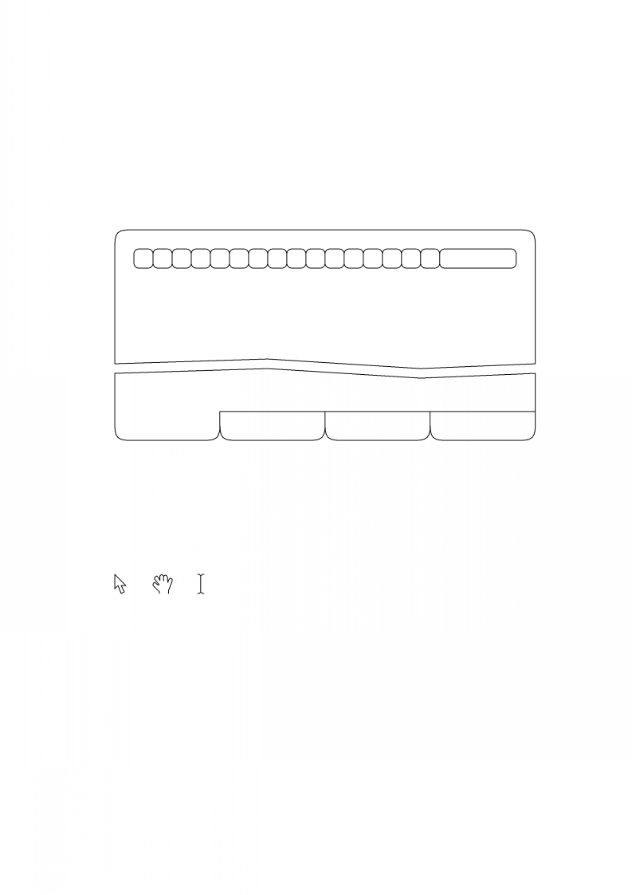
THE DESKTOP
When you start me up, I will quickly take over your screen so you no longer
have to look at that painted whore of an interface that comes with the kluge.
Instead, you will see my plain but honest face, like this:
A
B
C
D
E
F
G
H
I
J
K
...
W
X
Y
Z
3 items
a:\ (removable)
c:\ (fixed)
d:\ (cd-rom)
I think it's all pretty obvious. Alphabetical menus, status in the upper right.
Work area in the middle, tabs (to pick a different work area) at the bottom.
You can drag the tabs left and right to change their order.
These are my cursors. They'll pop up when you need them.
Note that there are no unintuitive, distracting, space-consuming scroll bars
anywhere in my interface. To scroll, press the right mouse button and shove.
Note also that the CTRL and ALT keys are almost always the same to me.
You can use your pinky or your thumb for menu shortcuts. The exception is
the ALT-TAB combo, which is used to switch to lesser applications.
5
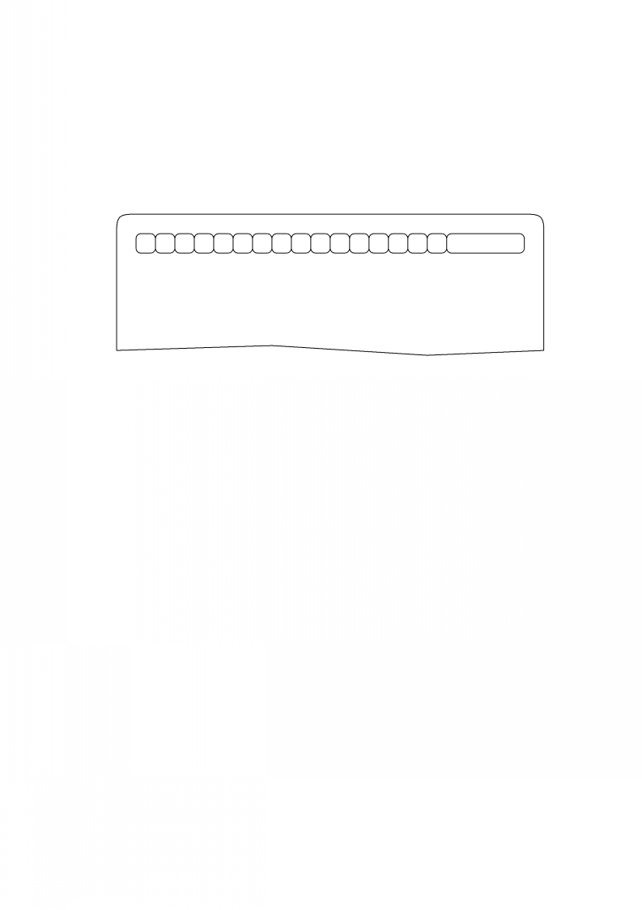
THE FINDER
My finder shows you the kluge's file system as it actually is. No gaudy window
frames. No silly little pictures. Just the directories and what's in them.
A
B
C
D
E
F
G
H
I
J
K
...
W
X
Y
Z
3 items
a:\ (removable)
c:\ (fixed)
d:\ (cd-rom)
Each work area is initially positioned at the root level, as shown above.
There are commands under "N" to make New directories, New documents
(for the writer), and New text files (for the compiler). Rename is under "R".
The Cut, Copy, Paste, and Duplicate commands are right where you'd expect
them to be, and operate in the expected way.
When you open a directory, with the Open command or by double-clicking,
the display changes to show the contents of that directory.
When you open a text file, my editor takes over.
When you open a document, the writer handles it.
When you open anything else, it is converted in memory to a hexadecimal
dump and displayed in the editor with the read-only flag set. You can,
however, force me to open a file as text or as a dump. Look under "O".
To go back, use the Close command, click the tab, or whack the ESCAPE key.
6
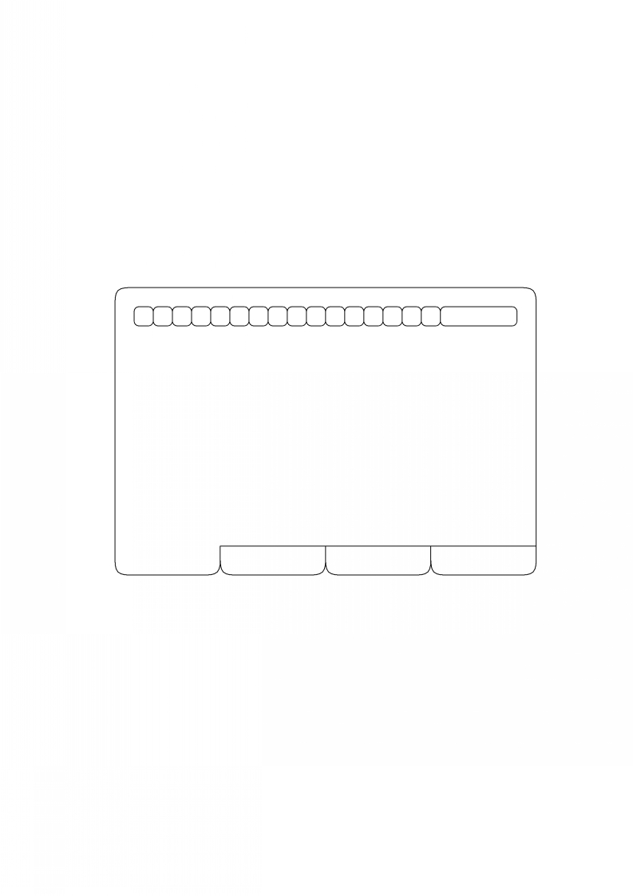
THE EDITOR
My editor is simple and efficient. When you open a text file I display it in the
work area and you manipulate it, with keyboard and mouse, in the usual ways.
Here, for example, are the instructions my creators gave me for printing a
number of copies of a source. It is part of the actual code in my editor file.
Being edited in my editor. I love this. It's like looking into your own soul.
A
B
C
D
E
F
G
H
I
J
K
...
W
X
Y
Z
681:1
To print a number of copies of a source:
If the source is nil, exit.
Begin printing.
Loop.
Add 1 to a copy.
If the copy is greater than the number, break.
Print the copy of the source.
Repeat.
End printing.
Now listen closely — this is how you get around in my editor.
Say you're looking for the above routine. Press CTRL-HOME to get to the
top of the file. Then hit CTRL-F and start typing. T. We jump to the first "T"
in the file. O. We're on the first "To". Keep this up until you're where you want
to be. Use BACKSPACE if you make a mistake; CTRL-N to find the next;
ESCAPE or a shortcut to end the search. It's as simple and efficient as that.
the editor
7
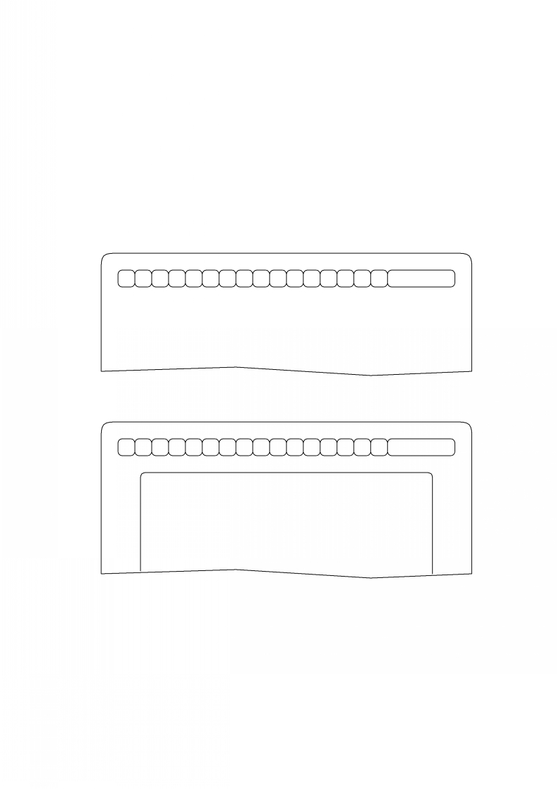
THE WRITER
My writer is a full-featured, what-you-see-is-what-you-get page-layout
program that makes it easy for me to tell you what I know about myself. In
fact, you can work with this very document in the writer as a help file.
When you open a document file, perhaps the one you're reading right now
(hint, hint), you see a list of all the pages in the document:
A
B
C
D
E
F
G
H
I
J
K
...
W
X
Y
Z
120 pages
Plain English Programming...
1
And when you open a page, there it is:
CONTENTS...
Overview...
2
3
A
B
C
D
E
F
G
H
I
J
K
...
W
X
Y
Z
Page 8
Pages can contain vector graphics, bitmapped pictures, and text. You can
spell-check, print, enlarge, reduce; it's all there. But what's really swell is that
documents are stored as text. Go ahead. Force me to open one that way.
THE WRITER
My writer is a full-featured, what-you-see-is-what-you-get page-layout
program that makes it easy for me to tell you what I know about myself. In
fact, you can work with this very document in the writer as a help file.
8
THE COMPILER
Now I know that right about here most programming books would drum up
some dippy little "Hello, World" program — and expect you to be impressed —
but I'd like to suggest that we skip the kid stuff and start makin' babies.
I see you're trembling. Don't be afraid. This may be the first time for you,
but I'm an old hand at this. I'll lead you through it. Gently.
(1) Open the CAL-4700 directory and copy all six of my files to the finder's
clipboard: the compiler, the desktop, the editor, the finder, the noodle, and
the writer. Shift-click or drag to select. Copy is under "C".
(2) Make a new directory on your "C" drive with an appropriate name like
"Baby Cal". Then open it up and paste the six files into it. Now open any of
those files. To open them all, just drag to select and tap the ENTER key.
(3) Okay, we're ready. Find the "R" menu and select "Run". You'll see some
status messages, and then our new Baby Cal will come to life. Do it. Do it now.
But watch closely or you might miss the birth. I'm never in labor for long.
Was it as good for you as it was for me? Look how handsome he is! But he
is not me — you can prove it with the Version command. And if you look in
the new directory on an empty tab, you'll see the executable file we begat.
Note that each program is stored in its own directory. If you want your
babies to look like you instead of me, copy only "the noodle" and write the
rest yourself. Any file without an extension is assumed to be source code
and the name of the directory is the name that is bestowed upon the EXE.
You can quit the Baby Cal now, and — assuming you believe that a creator
can do as he pleases with his creations — you can destroy him.
9
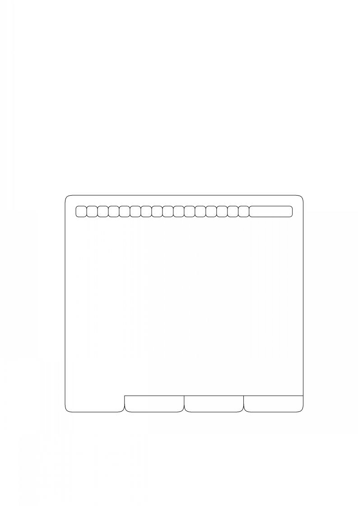
THE NOODLE
My last file is called the noodle.
About half of this file is quality stuff — types, global variables, and routines
that you will undoubtedly find useful. These are fully explained later.
The other half is sausage — things you don't want to examine too closely.
Mostly code that lets me communicate with the kluge.
Here's a sampling. See if you can tell which is which.
A
B
C
D
E
F
G
H
I
J
K
...
W
X
Y
Z
143:1
A second is 1000 milliseconds.
The copyright byte is a byte equal to 169.
To uppercase a byte:
If the byte is less than the little-a byte, exit.
If the byte is greater than the little-z byte, exit.
Subtract 32 from the byte.
To initialize com:
Call "ole32.dll" "CoInitializeEx" with 0 and 2 [coinit_aparthreaded].
To subtract a byte from another byte:
Intel $8B85080000000FB6008B9D0C0000002803.
the noodle
10
HOW I WORK
Alrighty then. Here's how I manage to do so much with so little.
(1) I really only understand five kinds of sentences:
(a) type definitions, which always start with A, AN, or SOME;
(b) global variable definitions, which always start with THE;
(c) routine headers, which always start with TO;
(d) conditional statements, which always start with IF; and
(e) imperative statements, which start with anything else.
(2) I treat as a name anything after A, AN, ANOTHER, SOME, or THE, up to:
(a) any simple verb, like IS, ARE, CAN, or DO, or
(b) any conjunction, like AND or OR, or
(c) any preposition, like OVER, UNDER, AROUND, or THRU, or
(d) any literal, like 123 or "Hello, World!", or
(e) any punctuation mark.
(3) I consider almost all other words to be just words, except for:
(a) infix operators: PLUS, MINUS, TIMES, DIVIDED BY and THEN;
(b) special definition words: CALLED and EQUAL; and
(c) reserved imperatives: LOOP, BREAK, EXIT, REPEAT, and SAY.
So you can see that my power is rooted in my simplicity. I parse sentences
pretty much the same way you do. I look for marker words — articles, verbs,
conjunctions, prepositions — then work my way around them. No involved
grammars, no ridiculously complicated parse trees, no obscure keywords.
But there are things that may surprise you. Or challenge you. Or infuriate you.
11
THE RULES
I don't care if you type in upper, lower, or mixed case. It's all the same to me.
Life is hard enough without some JAVA programmer making it harder.
I don't care where, or in what order, you put your definitions. Whatever
reasons there once were for such restrictive practices, they no longer apply.
This is the twenty-first century, for God's sake. Let's get with it.
I don't do nested IFs. Nested ifs are a sure sign of unclear thinking, and
that is something that I will not countenance. If you think this cramps your
style too much, read my code to see how it's done. Then think again.
I don't do nested LOOPS. Nested loops indicate that you have failed to
properly factor your code into manageable chunks, and I don't want you
regretting that later. Time after time my otherwise omniscient creators
thought they could get away with it, and time after time they were wrong.
I don't do OBJECTS. Objects suck. I do support a limited form of record
extension, and I have a remarkable way of reducing types to other types, but
I don't do objects. My page editor does just fine without them, thank you.
I don't do REAL NUMBERS. I do ratios, very elegantly, but I don't do reals.
My page editor reduces and enlarges and sizes shapes proportionately in and
out of groups and it does it all without real numbers. Master Kronecker was
right when he said, in German, "The dear God created the whole numbers; all
else is the work of man." I'm not interested in menschenwerk.
I don't do EQUATIONS. I do a little infix math, and I support "calculated
fields", but almost all the code you write will be strictly procedural in nature.
As the Osmosians always say, "The universe is an algorithm, not a formula."
Words you should take to heart. Especially if you're a math-head.
12
A Sample Program
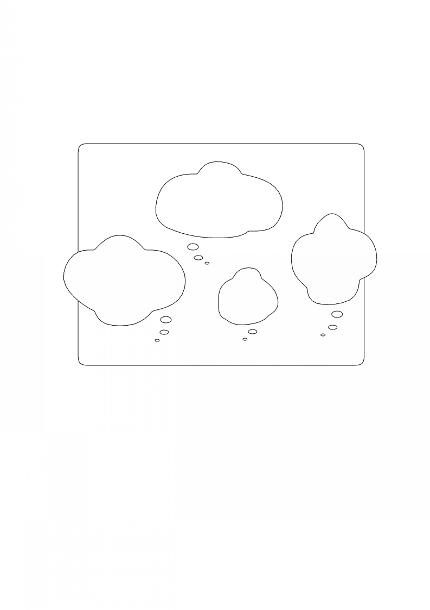
THE CAL MONET
Okay. Now that we're acquainted, let's make another baby. From scratch.
And let's teach him to finger paint. Here are some thoughts on the interface:
(2)
An original portrait,
in the style of Claude Monet,
is created on the screen.
(3)
We use these
The HAL 9000_
Quit
Print
Working...
tasteful buttons
to print
and quit.
(4)
Messages
go here.
(1)
We type the name of
any person, place, or thing
here, and press
ENTER.
Did you get it? "Thoughts on the interface?" I love it.
I'm also thinking we should ask our boy to paint more than one portrait of
each subject — even the best artists can be "uninspired" at times. We can use
the HOME, END, PAGE UP, and PAGE DOWN keys to scroll through his works.
We should probably implement a couple of keyboard shortcuts, too, so you
can see how that's done. Let's use ESCAPE to clear the input, CTRL-P for
Print, and CTRL-Q for Quit. We'll handle ALT-P and ALT-Q as synonyms.
14
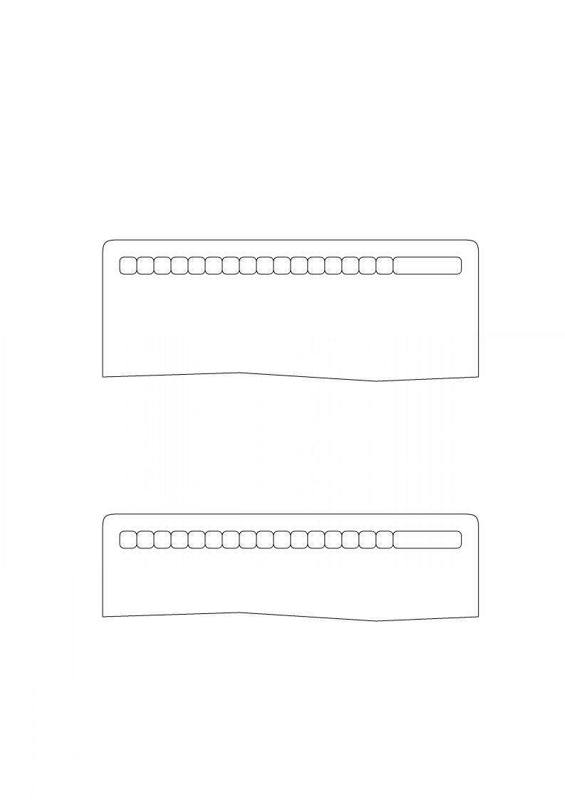
THE PROJECT DIRECTORY
Now that we're agreed on the design, let's start programming.
First, we need a directory for our project. So make a new directory anywhere
you want and call it anything you like. I'm going to assume, however, that
you put it on your "C" drive and that you called it "Cal Monet", like this:
A
B
C
D
E
F
G
H
I
J
K
...
W
X
Y
Z
4 items
c:\a directory that you already had with a ridiculously long name
c:\cal monet
Good. Now get a copy of my noodle from the CAL-4700 directory, open our
new directory, and slip it in there with CTRL-V.
Last step. Make a new text file in our new directory and call it whatever you
please. But don't give it an extension. I only compile files with no extension.
I'm going to assume you decided to call it "How to Paint", like this:
c:\cal-4700
c:\another directory that you already had
And now we're ready to write some Plain English code.
A
B
C
D
E
F
G
H
I
J
K
...
W
X
Y
Z
2 items
c:\cal monet\how to paint
c:\cal monet\the noodle
15
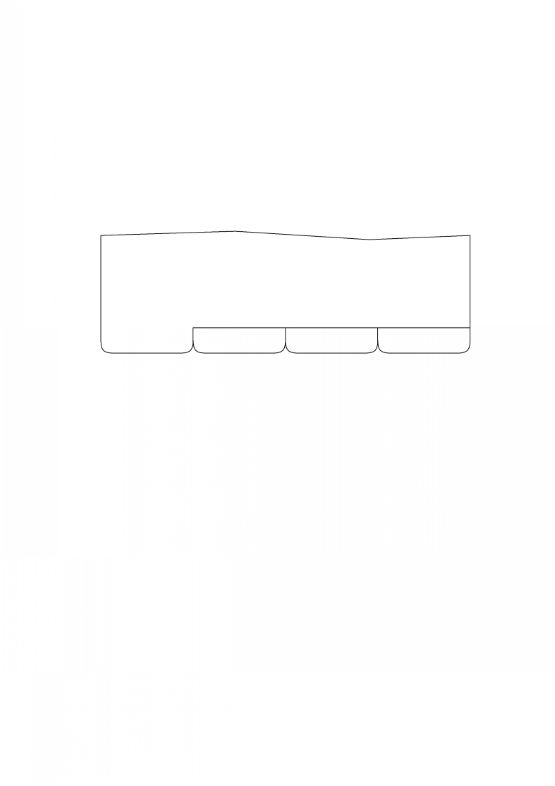
THE "RUN" ROUTINE
Open our source file, "How to Paint", and try to run it. CTRL-R. Read the
error that is cleverly displayed in the menu bar, then click the mouse or hit the
ESCAPE key to get things back to normal.
What we need is a routine like this one:
To run:
Start up.
Shut down.
So click it in there. Don't forget the spaces preceding "up" and "down". Isn't it
great not having to unnaturally cram your words together?
This is the smallest Plain English program you will probably ever write. It will
run, but it will not appear to do anything. Go ahead. Try it.
Told you so. But don't be deceived. It really did do something.
how to paint
If you want to know what it did — and you have a strong stomach — hold
your nose, open up the noodle, and use the Find command (like we discussed
earlier) to search for the words TO START UP followed by a colon. Routines
always start with the word TO, and their headers always end with a colon.
You can chase it down as far as you like. It's all there. Even the convoluted
calls and ignominious instructions necessary to communicate with the kluge.
But enough of this. I'm starting to feel queasy.
16
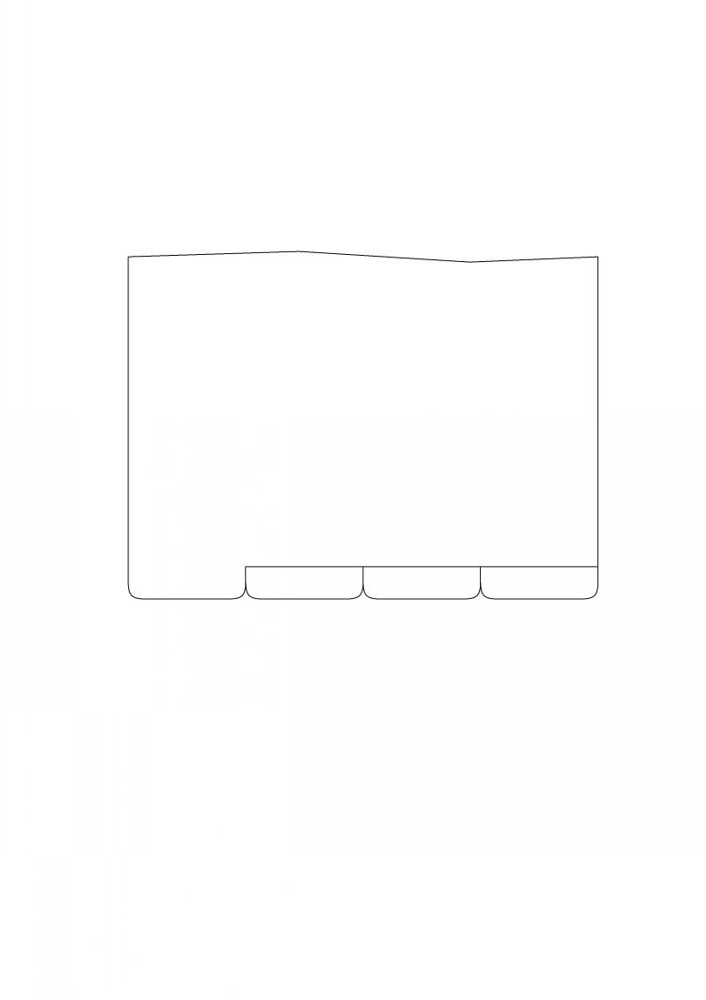
THE BASIC STRUCTURE
Here, then, is the basic structure of our program. First, we start up. Then we
initialize our stuff. Next, we handle any events (like key presses and mouse
clicks). Then we finalize our stuff and shut down. Here's the new code:
To run:
Start up.
Initialize our stuff.
Handle any events.
Finalize our stuff.
Shut down.
To initialize our stuff:
To handle any events:
To finalize our stuff:
how to paint
It still doesn't do much, of course, but it should still run. Try it to make sure.
Note that you can arrange your code chronologically, or hierarchically, or
however you choose. I don't care, and since you've been taught to use the
Find command to locate things, it really doesn't matter.
My creators thought alphabetical was best, so they put a "Sort Definitions"
command under "S". It's a bit line-oriented, and loose comments stick to the
routine above them. But try it out. You can Undo if you don't like the result.
17
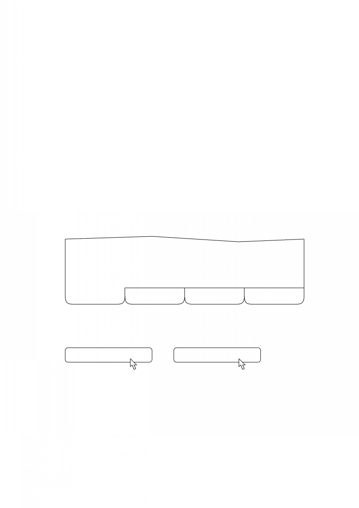
COMMENTS
You probably noticed that I mentioned comments on the preceding page, but
didn't say what they look like. I did that on purpose. I don't like comments.
Most comments are either useless, or worse. Useless, if they merely reiterate
what the code already says. Worse, if they attempt to clarify unclear code
that should have been written more clearly in the first place.
But don't think I don't understand comments. I support three different kinds
of comments, and my editor has special features for working with them.
SIMPLE COMMENTS
Anything between a backslash (\) and the end of a line is a simple comment:
To initialize our stuff:
how to paint
\ This is a useless comment that occupies an entire line of the source
\ This is a useless comment at the end of a line
You can enter simple comments one at a time, or you can select a whole
bunch of lines and work it out with these two commands:
You will find that my editor displays simple comments in a delightful sky blue,
making it easy for you to see what I'm going to ignore. And no, you can't
change the color. My creators have assured me that this is the right color.
Comment
Uncomment
T
U
or
18
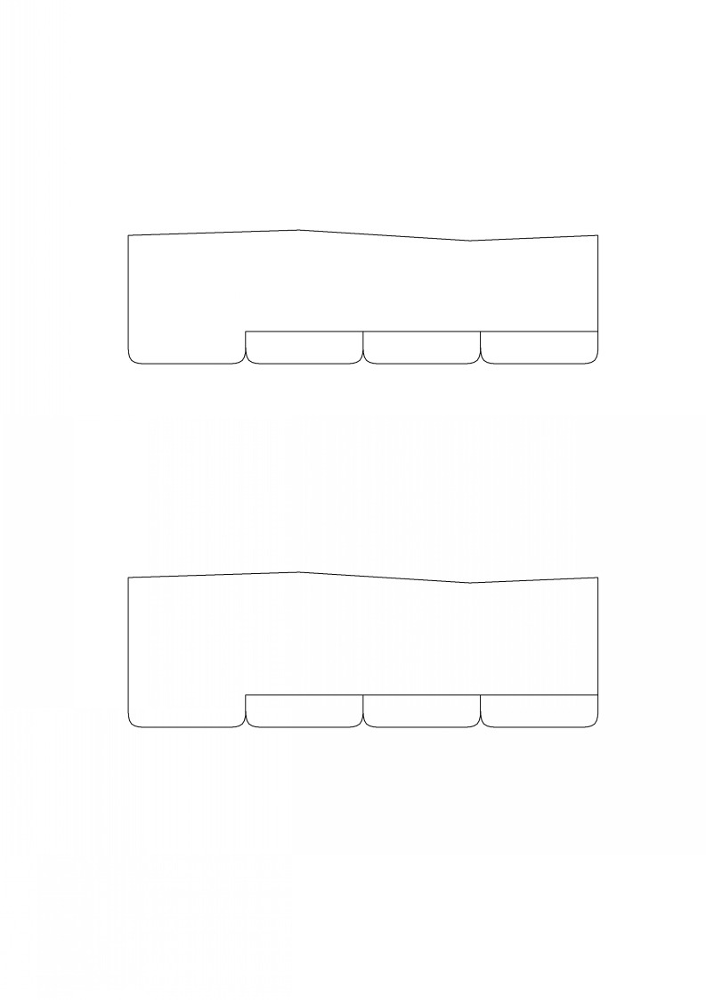
REMARKS
If you have to make a permanent remark in your code, and don't want it all
colored up, you can put it in square brackets, as in this unfortunate instance:
Remarks can appear anywhere on a line, and can alternate with executable
To buzz:
Call "kernel32.dll" "Beep" with 220 [hertz] and 200 [ms].
the noodle
code. To avoid common errors, remarks may not extend across lines.
QUALIFIERS
The third kind of comment that I understand is the qualifier. Qualifiers are
enclosed in parentheses, and may only appear in routine headers (and, of
course, in references to those routines). Consider, for example, this case:
To center a box in another box:
Note that qualifiers are not like simple comments and remarks. Qualifiers are
considered part of the program and affect how the compiled code executes.
We'll be seeing some qualifiers in the Cal Monet shortly.
Center the box in the other box (horizontally).
Center the box in the other box (vertically).
the noodle
19
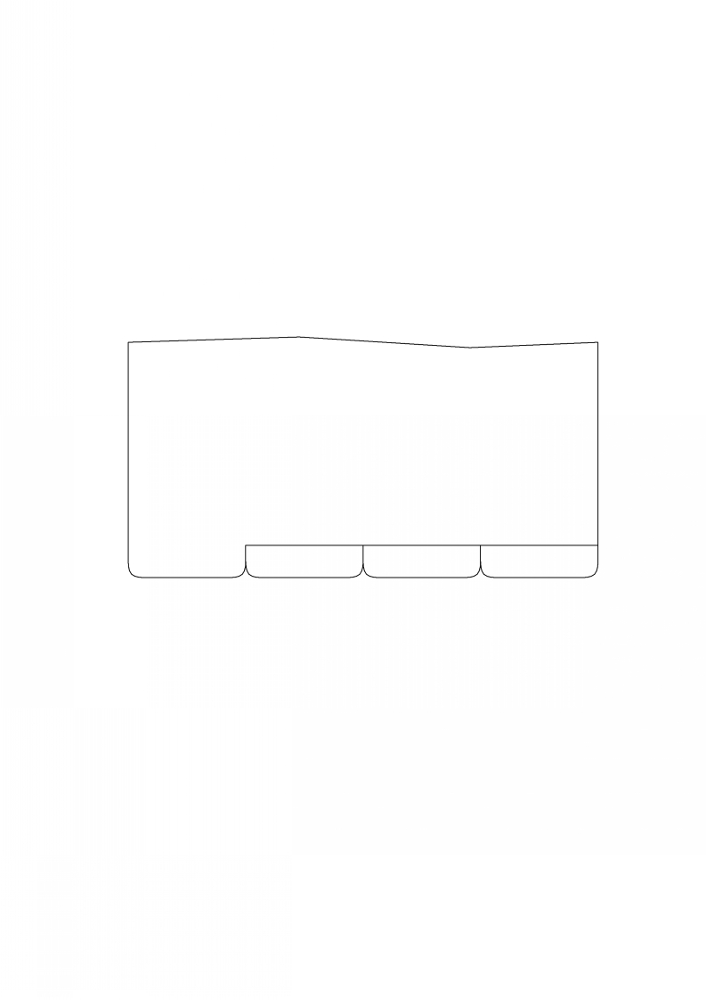
THE EVENT LOOP
If you looked around in my noodle a few pages back, you know that just
"starting up" on the kluge requires over 100 lines of the goofiest code ever
seen by mortal man. And if you look further into the event processing
defined there, you will find that it gets nothing but worse.
Fortunately, my creators have been able to simplify all of this, so that our
event handler requires only five lines. Here it is. Click it in. But don't run it.
To handle any events:
Deque an event.
If you're a seasoned professional, you'll know what I mean when I say that
If the event is nil, exit.
Handle the event.
Repeat.
To handle an event:
how to paint
"an event" in the second line defines a new local variable of type "event",
referenced in lines three and four as "the event". And you'll understand that
the same words in the header of the other routine define a parameter of the
same type (passed by reference) that is known, within that other routine, as
"the event". You'll also realize, after you think about it a bit, that one of the
things that makes Plain English succinct is that we don't name variables and
parameters — we refer to them with an article and a type name. As in real life.
If you're not a professional, don't worry about it. It means what it says.
20
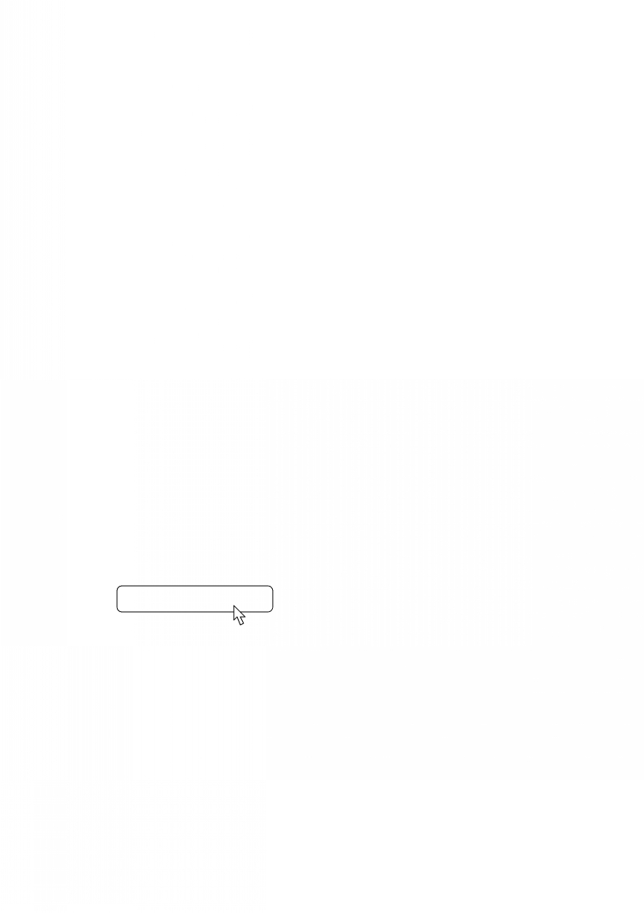
ETERNAL LOOPS
Now I cautioned you not to run the program as it stands. The reason is that
we have not provided ourselves with any means of stopping it. Once started,
it will simply repeat the same instructions, over and over, forever.
The traditional term is "infinite loop", but since it is not large in size but long
in duration, I prefer the term "eternal loop". Either way, it's a problem.
Especially if you were fool enough to run it when I told you not to.
But let's say you were, and you did. Or that some future error brings you to
the same pitiful state. What can be done, short of CTRL-ALT-DELETE?
I will tell you. In fact, I will show you. Run the program. I insist.
Now I know it doesn't look like it, but it is running. And running. And running.
You can't see it because we haven't told it to do anything visible or audible
yet. But it is running. And running. And running. So stop it. Like this:
(1) ALT-TAB back to me, the CAL-4700.
(2) Execute the Stop command. It's under "S".
Whew. Did you see both of us there in the ALT-TAB box at first? No? Do it
again. Yes? Good. Did you stop the Cal Monet? No? Do it again. Yes? Good.
Check now to make sure only I am running. No? Try again. Yes? Good.
That's how it's done.
Stop
21
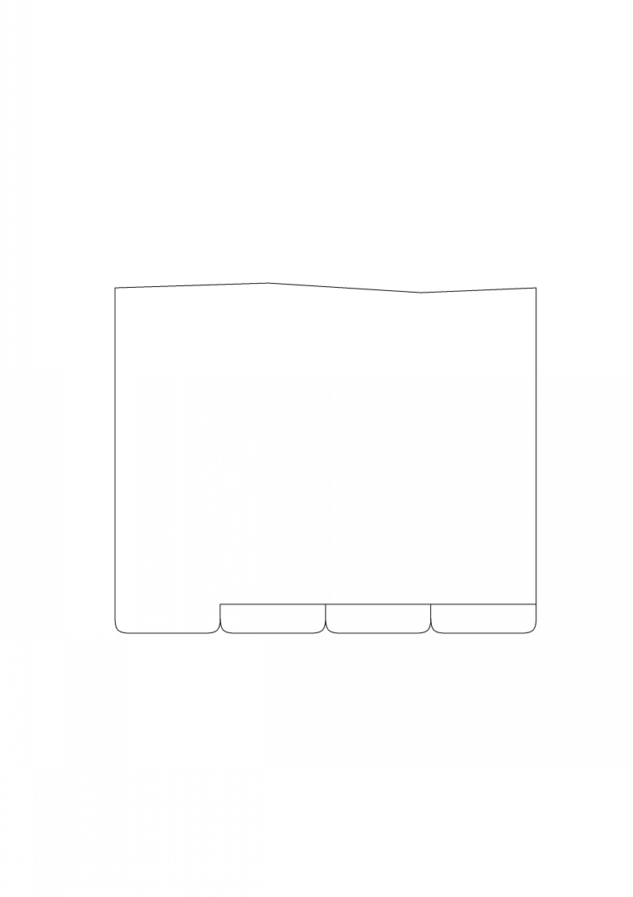
THE EVENT DISPATCHER
The kluge's foolbox — sorry, toolbox — includes hundreds of events that,
presumably, have to be handled in any meaningful application. The curious
thing is that my creators managed to bring me to life — desktop, finder,
editor, compiler, writer, and all of my noodle — using only ten. Ten.
And it turns out that the Cal Monet requires only four. Enter this code:
To handle an event:
If the event's kind is "set cursor", handle the event (set cursor); exit.
If the event's kind is "refresh", handle the event (refresh); exit.
If the event's kind is "left click", handle the event (left click); exit.
If the event's kind is "key down", handle the event (key down); exit.
To handle an event (set cursor):
Show the arrow cursor.
To handle an event (refresh):
To handle an event (left click):
If you're a veteran, you probably guessed that "the event" is a record and
that "kind" is a field in it. And yes, it's a string. You can read all about events
and records and fields and strings in the reference sections of this book.
If you're a beginner, just take note of the qualifiers and move on.
To handle an event (key down):
how to paint
22
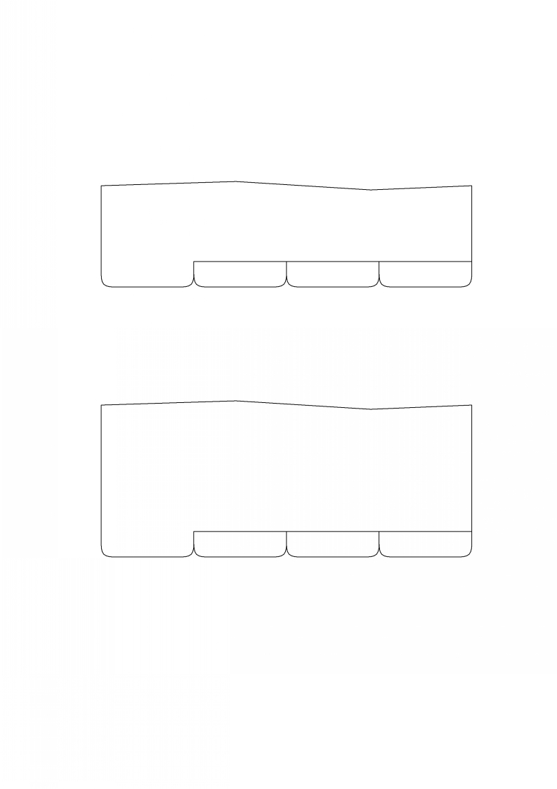
QUITTING
Let's put in our CTRL-Q shortcut so we can quit the Cal Monet any time we
want. First, we add a line to our key down handler:
An event is considered modified if either the CTRL or the ALT key was down
To handle an event (key down):
If the event is modified, handle the event (shortcut); exit.
how to paint
at the time the event occurred. The routine that makes this determination is
part of my noodle. You can look it up if you like.
Now we add one little routine, like this:
To handle an event (shortcut):
If the event's key is the q-key, quit; exit.
The "q-key" is defined in my noodle, as is the "quit" routine.
And now, we're ready. Run. ALT-TAB. Make sure you're in the Cal Monet.
Press CTRL-Q, or ALT-Q. Then ALT-TAB to make sure he's gone. Sweet.
how to paint
23
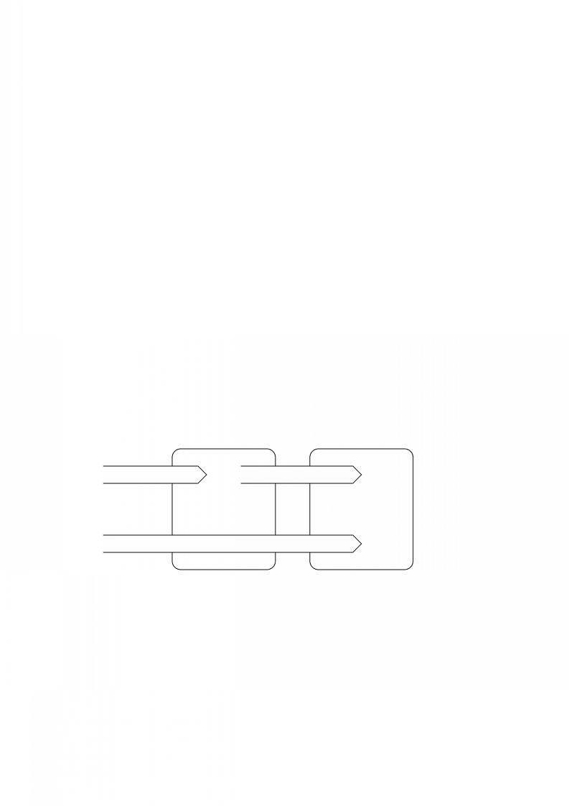
AVOIDING FLICKER
It's time to start thinking about actually getting something on the screen.
Which, unfortunately, is harder than it should be. There are two difficulties
we must overcome. The first is flicker.
More often than not, a completed screen display consists of a number of
distinct, overlapping objects, drawn back to front. My handsome face, for
example, has a large gray pad at the back, some roundy white menu buttons
in front of that, and some uppercase letters in front of the buttons.
Now if my face was drawn right on the screen, you would experience a bad
case of flicker. The menus would momentarily disappear altogether (when the
pad was drawn), then the buttons would appear, one at a time, first without
the letters, and then with them, and so forth. Distracting. Annoying. Ugly.
We solve this problem much as an artist would. We work on a canvas in
memory that is concealed from prying eyes and then, when the drawing is
complete, we reveal it all at once. Like this:
draw
refresh
Note the terms in the above diagram. By convention, we use the word "draw"
to indicate that we are working on the invisible canvas in memory. We use the
word "refresh" when we transfer the contents of the canvas to the screen.
And we say "show" when we want both to happen in quick succession.
show
CANVAS
SCREEN
24
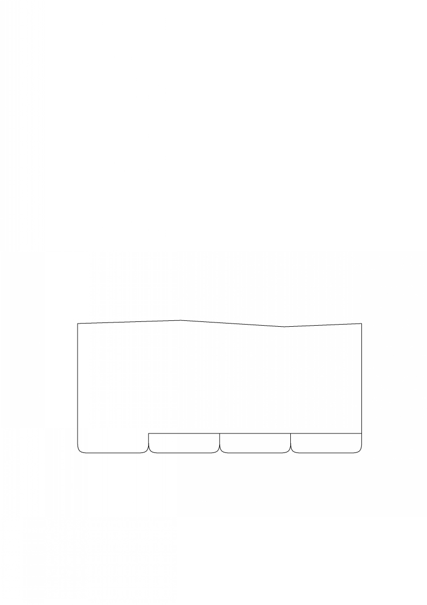
THE REFRESH EVENT
The second screen-related difficulty we have to face is that the kluge tries
to be a multi-tasking system, and only partially succeeds. Oh, it's bad enough
that I have to share valuable resources with other, less deserving, programs.
And that I can never be sure how long anything is going to take. And that
I'm constantly being interrupted when I'm trying to get my work done.
But the real problem arises when some other program rudely takes over the
screen and splatters my handsome face with idiotic icons and other tasteless
tripe. And why is this a problem? Because the convoluted kluge — the kluge
that somehow manages to restore all of my memory and registers and flags
to the exact state they were in at the moment of interruption — cannot seem
to remember what my face looks like! So what does the kluge do? It sends
us a "refresh" event, and expects us to do all the work.
Fortunately, when all is said and done, the refresh event proves to be more
bothersome than difficult. Such is life. Here's how we deal with it:
To handle an event (refresh):
Show everything.
The reason we make the "show everything" routine separate will be clear soon
enough. How we "draw the background" is covered on the next few pages.
To show everything:
Draw the background.
Refresh the screen.
how to paint
25
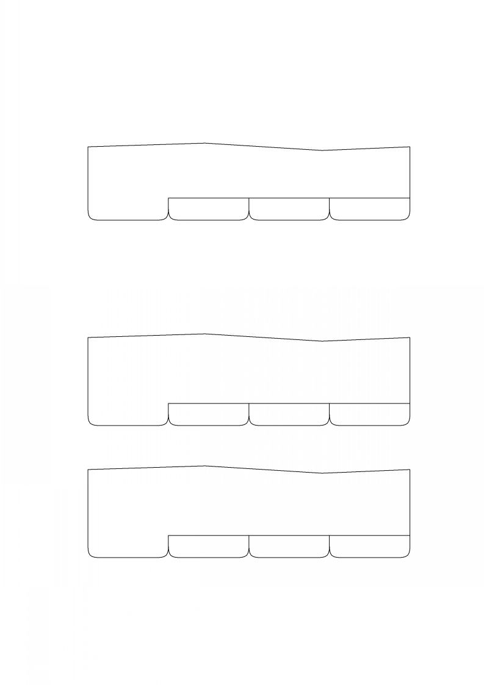
THE BACKGROUND
Our background begins with a definition. Type it in:
If you've grown up programming in other, more obscure, languages, you will
probably think of "the background" as a global variable of type "picture".
And that's okay. It is. But if you're just starting out, you will more likely think
The background is a picture.
how to paint
something like, "The background is a picture". And that's okay, too. It is.
We'll create the background when we initialize our stuff:
To initialize our stuff:
Create the background.
how to paint
And destroy it when we're done:
To finalize our stuff:
Destroy the background.
how to paint
26
MEMORY LEAKS
The background, as we've said, is a picture. Pictures require memory for
storage. How much memory depends, of course, on the size of the picture.
Since we don't always know in advance how big or small a picture might be,
memory for pictures is allocated, dynamically, at run time. This memory must
later be deallocated when it is no longer needed.
By convention, we use the words "create" and "destroy" whenever dynamic
memory allocation and deallocation is involved. It is your responsibility to
destroy whatever you create before relinquishing control in your program.
If you don't, you will cause a "memory leak", and bits of memory will drip
from your computer onto your shoes.
You'll be able to see this for yourself once we've created our background.
Just "comment out" the line that destroys it, and when you quit the program,
with CTRL-Q, a frightening message box will appear with the bad news.
Now if you've programmed before, you'll probably want to know that...
(1) Strings are dynamically allocated and can be of any length — but string
memory is managed entirely (and very efficiently) by me so they appear to be
static to you. In other words, don't worry about them. Just enjoy.
(2) When you destroy a thing, everything attached to that thing is destroyed
along with it. This frees you from the tedious burden of writing detailed
destroy routines for each kind of thing you create.
(3) Anything more than this falls under the heading "garbage collection" and,
as every manly programmer knows, garbage collection is for sissies.
If you've never programmed, just make sure you clean up after yourself.
27
DAB, DAB, DAB
Alright, back to work. We create the background by dabbing the off-screen
canvas with various shades of gray, refreshing the screen every 1000 dabs.
When we're done, we extract a copy so we can use it during refresh events.
To create the background:
Draw the screen's box with the white color and the white color.
Loop.
Pick a spot anywhere in the screen's box.
Pick a color between the lightest gray color and the white color.
Dab the color on the spot.
If a counter is past 80000, break.
If the counter is evenly divisible by 1000, refresh the screen.
Repeat.
Extract the background given the screen's box.
To dab a color on a spot:
Pick an ellipse's left-top within 1/16 inch of the spot.
Pick the ellipse's right-bottom within 1/16 inch of the spot.
Draw the ellipse with the color and the color.
Colors are defined in my noodle; there's a picture of the palette later on.
A spot is a pair with an x and y coord. Look it up. The random ellipse in the
dabber cleverly simulates fingertip painting with varying degrees of pressure.
But enough talk. Let's see what our boy can do. Run it. Then ALT-TAB a few
times to make sure the refresh event is being handled properly. Woohoo.
how to paint
28
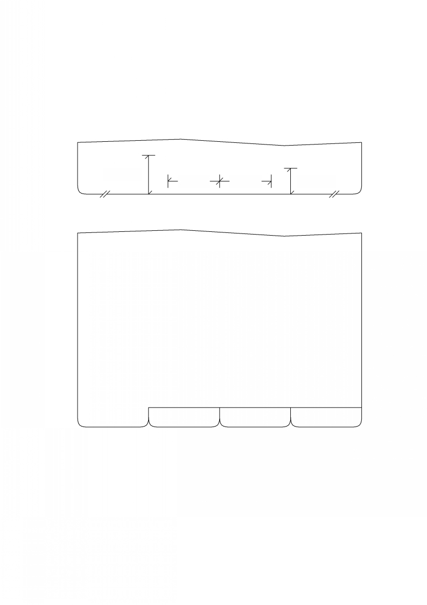
THE STATUS
According to our design, the Cal Monet is supposed to display status and
error messages at the center-bottom of the screen. Here's a close-up:
And here are the definitions we need to get started with it:
< Status or Error Message >
1 inch
3/4 inch
1/2 inch
1 inch
The status has a box and a string.
To initialize the status:
Put the screen's center into a spot.
Put the spot's x minus 1 inch into the status' left.
Put the spot's x plus 1 inch into the status' right.
Put the screen's bottom minus 3/4 inch into the status' top.
Put the screen's bottom minus 1/2 inch into the status' bottom.
To draw the status:
Nothing extraordinary here.
But note that when we draw the status, we don't draw the box — we just use it
to properly position the string on the screen.
Draw the status' string in the center of the status' box.
how to paint
29
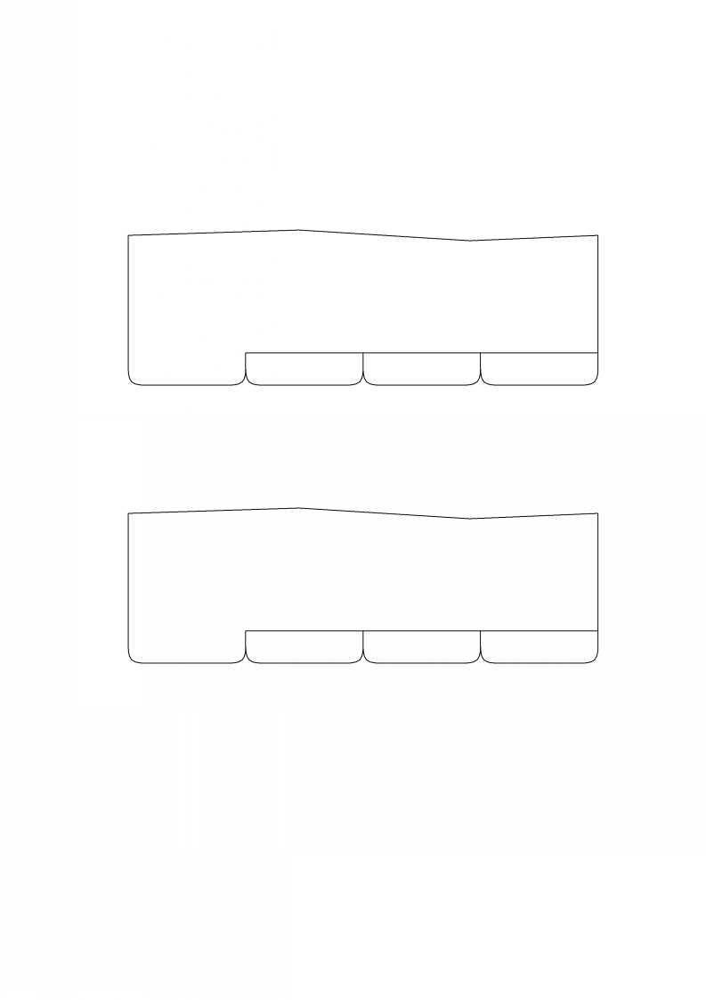
THE STATUS API
Now we're going to add a couple of trivial routines that will nevertheless
make using our status facility simple and easy. Here's the first one:
To clear the status:
Clear the status' string.
Show everything.
how to paint
This routine will be called at the start of each "transaction" to make sure
that status and error messages don't outlive their usefulness.
And here's the other routine:
To show a string in the status:
Put the string into the status' string.
Show everything.
This routine will be used all over the place to let the user know what we're
doing. It allows us to set the status message with a single line of code.
If you're an experienced programmer (and you're not a lazy pig) you know
how handy trivial routines like these can be. So don't hesitate to put 'em in.
If this is your first time out (or you are a lazy pig), take our word for it.
how to paint
30
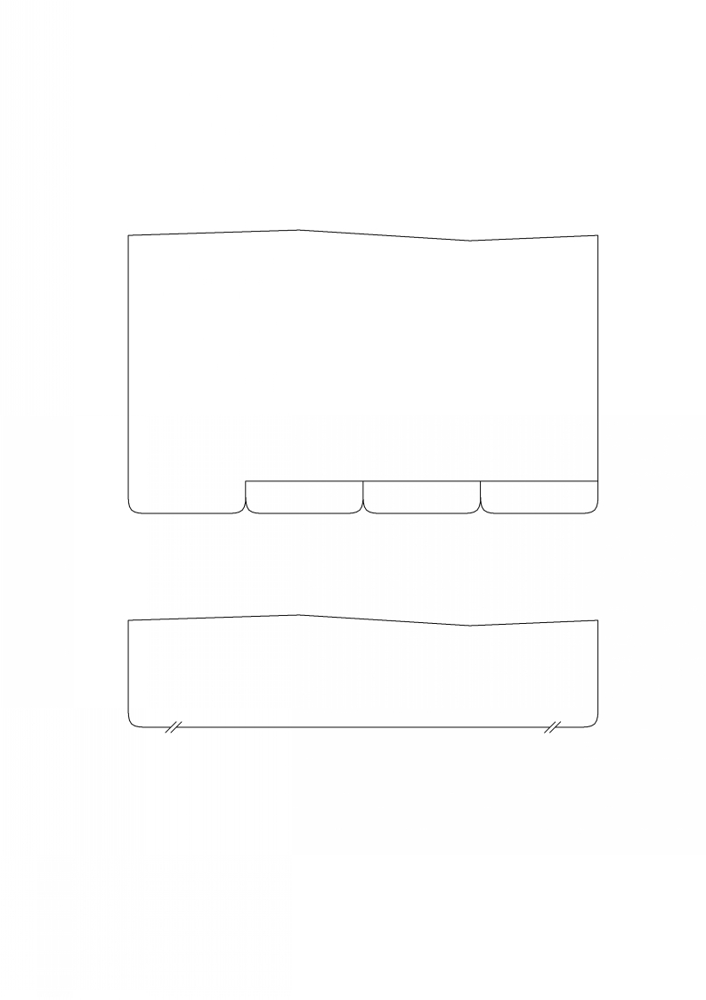
HELLO, WORLD!
Finally, two of our existing routines need a little extension to take advantage
of our new status facilities. Here they are with the new code in place:
To show everything:
Draw the background.
Draw the status.
Refresh the screen.
To initialize our stuff:
Create the background.
Make the changes to the two routines, then crank our boy up. After he's
through dabbing the background on the screen, you'll see him display the
initial status message in the center-bottom, like this:
Initialize the status.
Show "Hello, World!" in the status.
how to paint
Nice. Since we re-draw everything when we get a refresh event, the status is
preserved even if you ALT-TAB around. Try it. Later, we'll adjust the status
message in various places to reflect the current state of the program.
Hello, World!
31
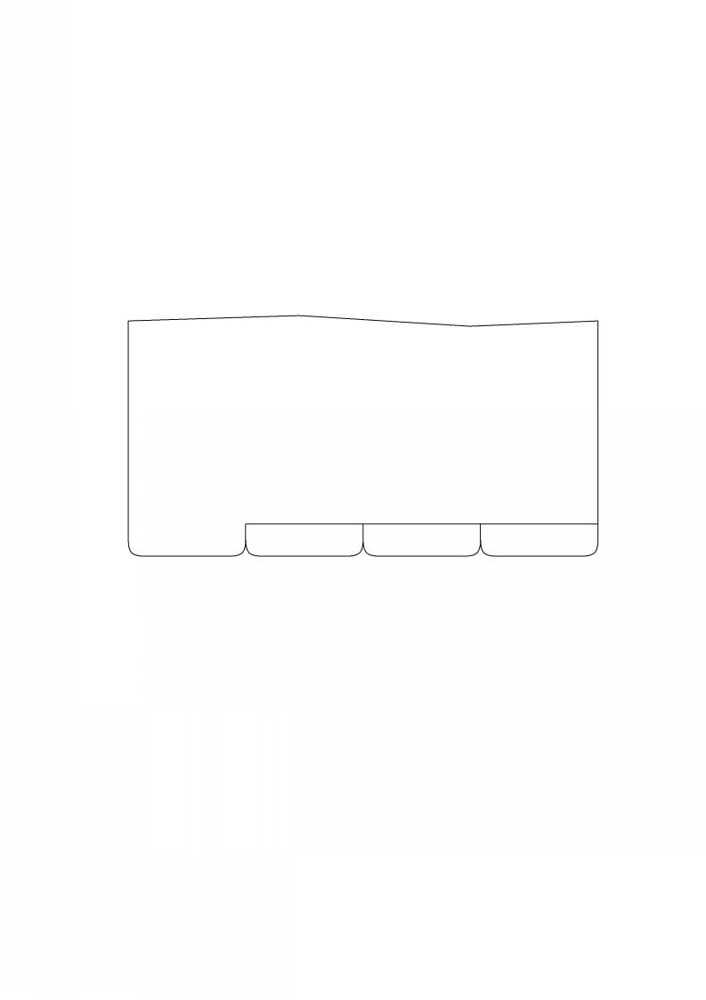
BUTTONS
Our status message was a one-of-a-kind thing. But our buttons are not.
Their names are different, of course, and they invoke different routines. But
their general form and behavior is identical.
We can therefore define "button" in a generic way, together with a handful
of support routines that will work on any button. We begin here:
A button has a box and a name.
To make a button given a spot and a name:
If you're a clever coder with lots of experience and a deep understanding of
English grammar, you will be able to deduce that the indefinite article at the
Put the spot's x minus the name's width into the button's left.
Put the spot's y minus 1/4 inch into the button's top.
Put the spot into the button's right-bottom.
Put the name into the button's name.
how to paint
start of the first definition indicates we are defining a type, not a variable.
If you're not, you will simply think, "A button has a box and a name. Okay."
But if you're an observant reader, experienced or not, you will conclude that
buttons do not require dynamic memory allocation, since we use the word
"make" instead of "create" in the second definition's header.
And you will also see, I hope, that a button's width depends on its name, and
that the spot we start with is at the right-bottom of the button.
32
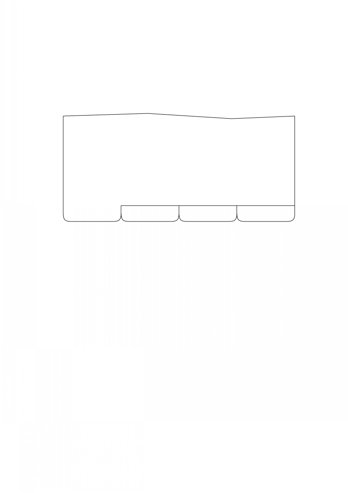
WORKING WITH BUTTONS
We want to see our buttons on the screen, of course, and we want to be able
to click 'em to make things happen. Here's a couple of support routines:
To draw a button:
Draw the button's name in the button's box.
To decide if a spot is in a button:
If the spot is in the button's box, say yes.
Say no.
Since a button's box is exactly the right size for the name we put in it, we can
draw the button's name without any concern about alignment. We just draw
the button's name in the button's box and we're done. Feel free to draw the
button's box and indent it and outdent it and color it and chisel it if you like.
Just kidding.
how to paint
The second routine is an example of a special kind of routine that tells me
how to make decisions. Routines of this kind are called "deciders", and they
always start with the words TO DECIDE IF. If you've had the misfortune of
programming in a less natural language, and you can't help yourself, you can
think of deciders as boolean functions. But try not to.
What you must remember here is that I have absolutely no tolerance for
wishy-washy thinking. To exit a decider, you must reach a definite conclusion
and either "say yes" or "say no". Nothing else will do.
33
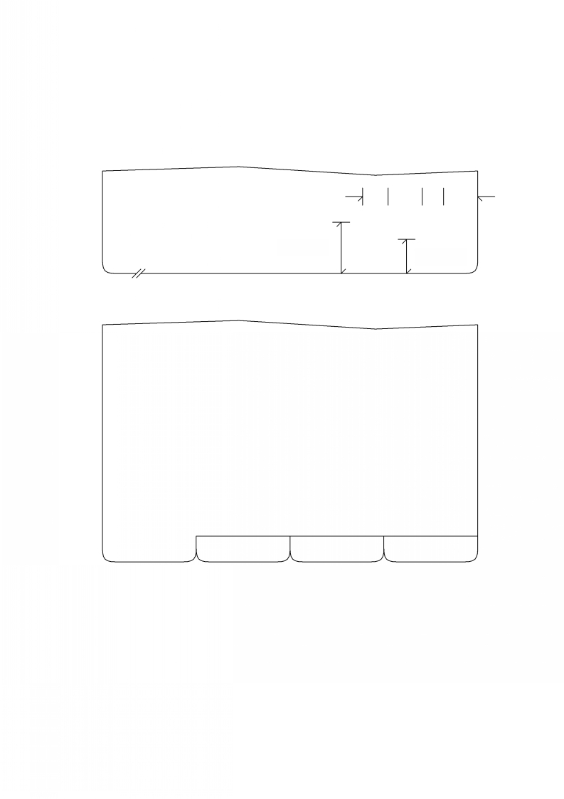
WORKING WITH OUR BUTTONS
Now here's the design for the buttons in the Cal Monet:
And here's the code to implement 'em:
3/4 inch
1/2 inch
Quit
Print
?
?
1/2
1/2
The print button is a button.
The quit button is a button.
To initialize the buttons:
Put the screen's bottom minus 1/2 inch into a spot's y.
Put the screen's right minus 1/2 inch into the spot's x.
Make the quit button given the spot and "Quit".
Put the quit button's left minus 1/2 inch into the spot's x.
First, we define both of our controls as buttons. Then we make the Quit
button, 1/2 inch in from the right and 1/2 inch up from the bottom of the
screen. Finally, we use the Quit button's left — which was calculated in the
"make a button" routine — to make the Print button.
Make the print button given the spot and "Print".
how to paint
34
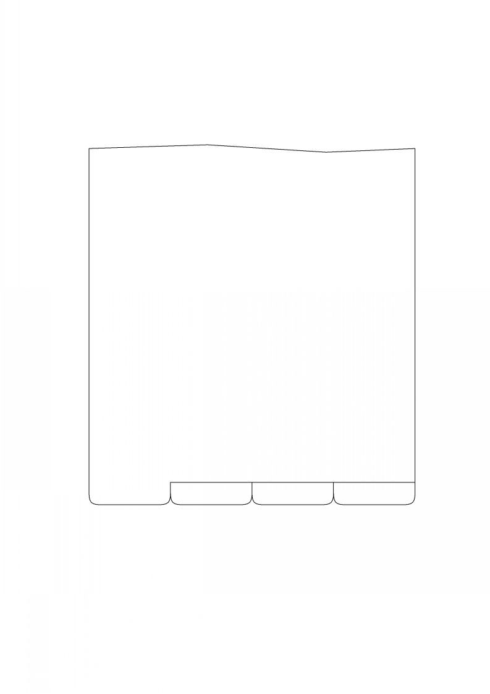
MAKING OUR BUTTONS WORK
Almost there. We need to update three routines, and add one more. Like this:
To initialize our stuff:
Create the background.
Initialize the status.
Initialize the buttons.
Show "Hello, World!" in the status.
To show everything:
Draw the background.
Draw the status.
Draw the print button.
Draw the quit button.
Refresh the screen.
To handle an event (left click):
Clear the status.
If the event's spot is in the print button, print.
If the event's spot is in the quit button, quit.
Note that we consider each click a new transaction, and clear the status.
And note that the print routine won't really work, but we'll know we got there.
Now run. Click. No status. Click Print. "Printing...". Click Quit. Bye-bye.
To print:
Show "Printing..." in the status.
how to paint
35
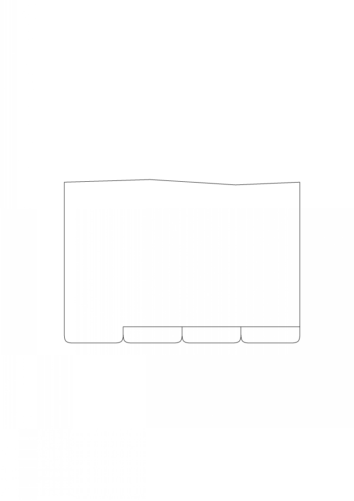
TEXT
There's a powerful thing called text in my noodle that makes it relatively easy
to include the written word in your applications. Cut, copy, paste, undo, redo,
wrap, even spell checking, are all supported. And it's fast and efficient. My
editor, for example, is actually just a great big text block. You can read all
about text in the Gray Matter Glossary at the back of this book.
A full implementation of text, however, is not required for the Cal Monet.
Something much simpler will do. Here are the basic definitions. Click 'em in:
The text has a box and a string.
To initialize the text:
Put the screen's left plus 1/2 inch into the text's left.
Put the text's left plus 2 inches into the text's right.
Put the screen's bottom minus 3/4 inch into the text's top.
Put the screen's bottom minus 1/2 inch into the text's bottom.
To draw the text:
Put the text's string then "_" into a string.
Draw the string in the text's box.
Our text box is placed 1/2 inch in and up from the left-bottom of the screen.
It is 1/4 inch tall and 2 inches wide. I don't think we need a picture here.
Note, however, that we've implemented a simple but effective "poor man's
caret" — when we draw the text, we append an underscore to the end of it.
how to paint
36
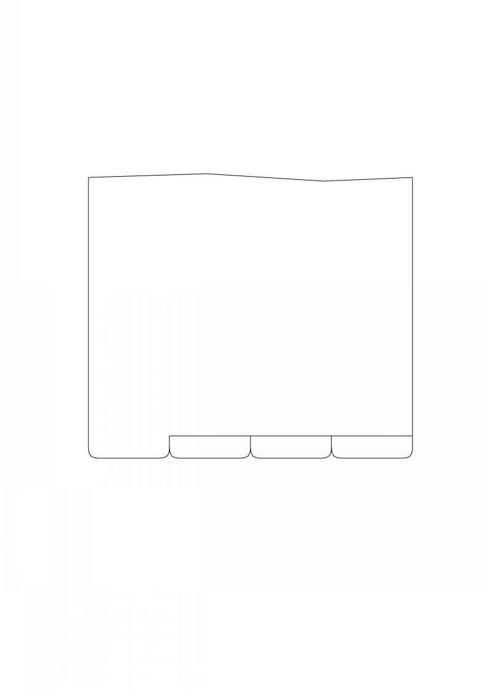
MAKING TEXT WORK
We need to modify two of our routines to make our text work. We also need
to dispatch and handle keyboard activity, but we'll deal with that on the next
couple of pages. For now, just make sure you've got these routines updated:
To initialize our stuff:
Create the background.
Initialize the status.
Initialize the buttons.
Initialize the text.
Show "Hello, World!" in the status.
To show everything:
Hide the cursor.
Draw the background.
Draw the status.
Draw the print button.
Draw the quit button.
Draw the text.
Refresh the screen.
The only change to the first routine is the line that initializes the text.
The second routine, however, is different in two ways. We draw the text, of
course, before refreshing the screen. But we also hide the cursor so it
doesn't get in the way of the text when the user is typing. But don't worry
about it. The "set cursor" event will bring it back whenever the mouse moves.
how to paint
37
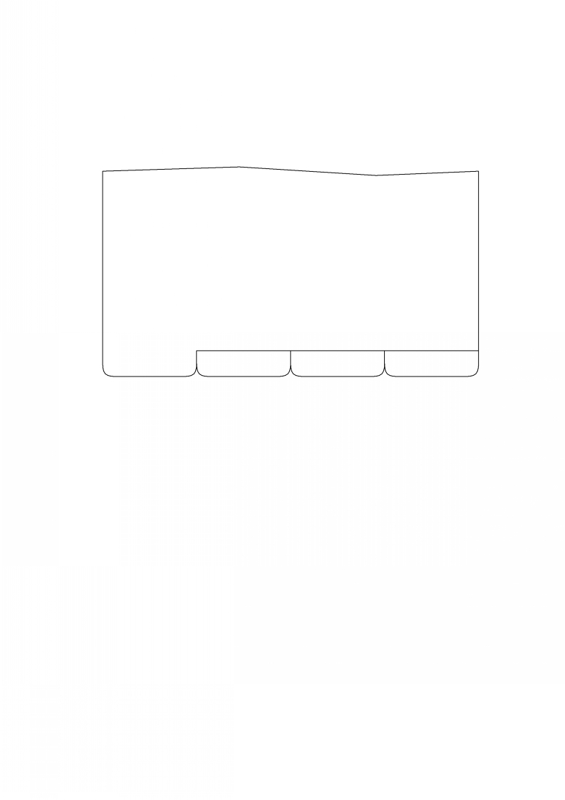
DISPATCHING KEY PRESSES
Here's how we modify our "key down" handler to dispatch keystrokes:
To handle an event (key down):
Clear the status.
If the event is modified, handle the event (shortcut); exit.
If the event's byte is printable, handle the event (printable); exit.
Put the event's key into a key.
If the key is the escape key, handle the event (escape); exit.
If the key is the backspace key, handle the event (backspace); exit.
If the key is the enter key, handle the event (enter); exit.
First, note that we consider any keypress the beginning of a new transaction,
and clear the status. A bit of overkill, perhaps, but it keeps the screen clean.
Then we handle shortcuts the same as before.
If the event's byte is printable, we pass it on down to a helper. Note that
how to paint
we're checking the event's byte here, not the event's key. This is because a
given key can produce both printable and non-printable values. CTRL-A and
ALT-A, for example, are non-printable. SHIFT-A is printable, but differs
from UNSHIFTED-A. If you want to know exactly what "printable" means,
look it up in my noodle.
Finally, we put the event's key into a local key just to shorten up the next three
lines. There will be four more lines for HOME, END, PAGE UP and PAGE DOWN
when we dispatch them later on.
38
HANDLING KEY PRESSES
Here are the helpers our key down dispatcher needs:
To handle an event (printable):
Append the event's byte to the text's string.
Show everything.
To handle an event (escape):
Clear the text's string.
Show everything.
To handle an event (backspace):
If the text's string is blank, cluck; exit.
Remove the last byte from the text's string.
Show everything.
To handle an event (enter):
how to paint
As we mentioned earlier, printable keys are simply added to the text. The
ESCAPE key clears the text. The caret, however, will still appear since it is
appended in the draw routine even if the text's string is blank. BACKSPACE
will either delete the last byte or cluck, as appropriate. The last helper, the one
for the ENTER key, we'll be beefing up on the next few pages.
Now run the little guy and see him work. Got a caret? Good. Type something.
Status and cursor gone? Good. ALT-TAB. Still there? Good. Backspace 'til it
clucks. Good. Move the mouse. Cursor back? Good. Press Quit. Nice.
39
THE MAGIC
So we type the name of any imaginable person, place, or thing in our little
text box, and press ENTER. After a few seconds, an original portrait, in the
style of Claude Monet, appears on the screen. With a bunch of similar works
waiting in the wings behind the PAGE UP and PAGE DOWN keys. Amazing.
But how are we going to make this happen?
As Claude Monet himself would, of course. We'll just find some suitable
models, then create some works of art based on those models. And how will
we create a work based on a model? Again, as Claude would. Pick a spot on
the model, mix some paint, dab the canvas. Repeat until done.
All we need now are (1) some models, and (2) a look-and-dab routine.
Well, the second part is relatively easy. We've already taught the Cal Monet to
dab a canvas — that's how he paints the background every time he runs. The
"look" part, I'm sure, is just a minor extension to the existing algorithm.
It's the first part that's tricky. Where are we going to find models for
everything under the sun? The HAL 9000. A 1957 Chevy. The Rolling Stones.
I know I don't have them in my memory bank, and the Cal Monet certainly
doesn't have them in his. Fortunately, I know someone who does. Googley.
He's seen pretty much everything there is to see. And he's willing to share.
So here's the plan.
When the ENTER key is pressed, we'll ask Googley to give us a page full of
URLs (uniform resource locators) where images of whatever the user typed in
can be found. We'll store each of these URLs as a work in progress. Then,
when it's time to display a work, we'll finish it up — look and dab.
40
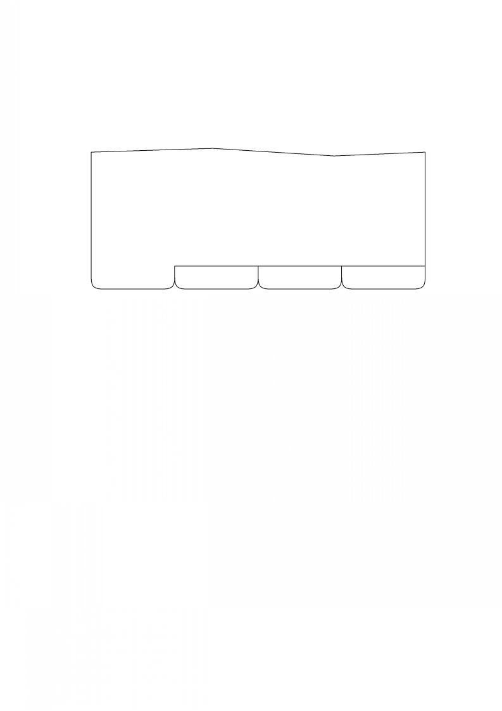
WORKS
Here are the basic definitions we need for our works d'art:
A painting is a picture.
A work is a thing with a URL and a painting.
The works are some works.
how to paint
The first line makes "painting" a synonym for "picture". We want to make it
clear that our works are original works of art, not just downloaded pictures.
In fact, you'll see later that we don't save the images we get from Googley
at all. Once we create a work from the model, the model is no longer needed.
Now if you're an expert in dynamic data structures, listen up.
The word "thing" in the second definition is very special to me. It indicates a
dynamic data object that can be linked to others of the same kind to form a
chain — each object pointing both to the one before it, and the one after it.
If you're thinking that sounds like a doubly-linked list, you're right. Routines
to insert, append, and delete things can be found in my noodle.
"The works", defined on the third line, is a such a chain.
Now if you're not an expert in dynamic data structures, you don't really need
to understand all that techno-babble. Just latch on to these two thoughts:
"A work is a thing with a URL and a painting" and "The works are some works".
41
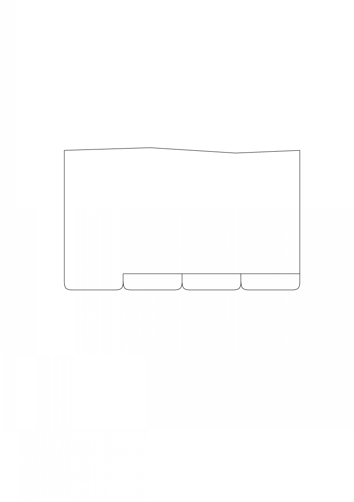
THE CURRENT WORK
Each URL that Googley returns us becomes a work — initially "in progress",
later finished and displayed to the user. We need to keep track of which work
is on the screen, and we need a way to switch from one work to another.
Here's some code that will help:
The current work is a work.
To go to a work:
If the work is nil, exit.
"The current work" is a reference to the work that is currently on the screen.
Show "Working..." in the status.
Put the work into the current work.
Finish the current work.
Clear the status.
Show everything.
how to paint
If there are no works, the current work will be nil. This occurs at start up, and
whenever a request cannot be satisfied. When a new request is processed, the
current work is set to the first of the works produced. Later, it will change as
the user taps the PAGE UP, PAGE DOWN, HOME, and END keys.
The normal method of setting the current work is shown above. If the
requested work is nil, no action is taken. The status message is necessary
because some delay might be experienced when the Cal Monet is dabbing.
The status is cleared, of course, before the finished work is displayed.
42
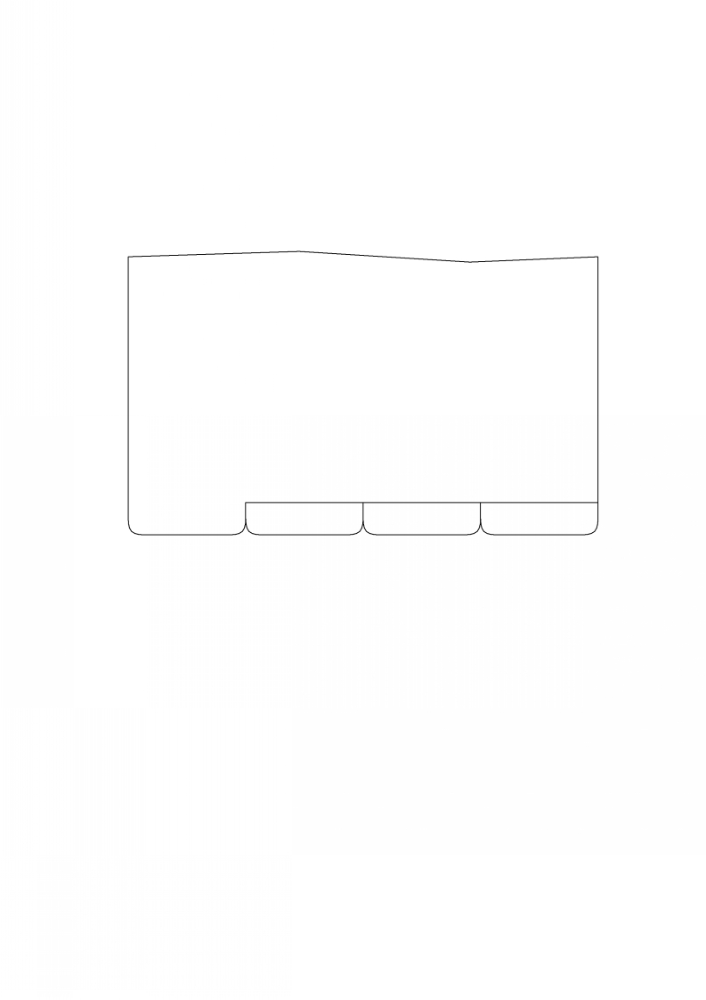
WORKING WITH WORKS
We need a routine to draw our works, of course, but (like any artist) we only
want to reveal our finished works. Which means we also need a decider to say
which is which. Here's the code:
To draw a work:
If the work is nil, exit.
If the work is not finished, exit.
Draw the work's painting.
To decide if a work is finished:
The first routine checks to see if the work is finished, and, if it is, draws it.
There's no "draw a painting" routine yet, and we're not going to put one in,
either. But since we've said that a painting is a picture, I can just use the
If the work is nil, say yes.
If the work's painting is not nil, say yes.
Say no.
how to paint
standard "draw a picture" routine in my noodle to do the job.
If you're a nerd, you'll recognize this as "automatic type reduction" and will
wonder how I accomplish it with such efficiency and finesse. If you're not a
nerd, you'll probably think, "What's the big deal?" and wonder why every
programming language doesn't have this capability.
The second routine is a standard decider. Note, however, that it treats a nil
work as finished. If there's nothing to finish, we're finished. Right?
43
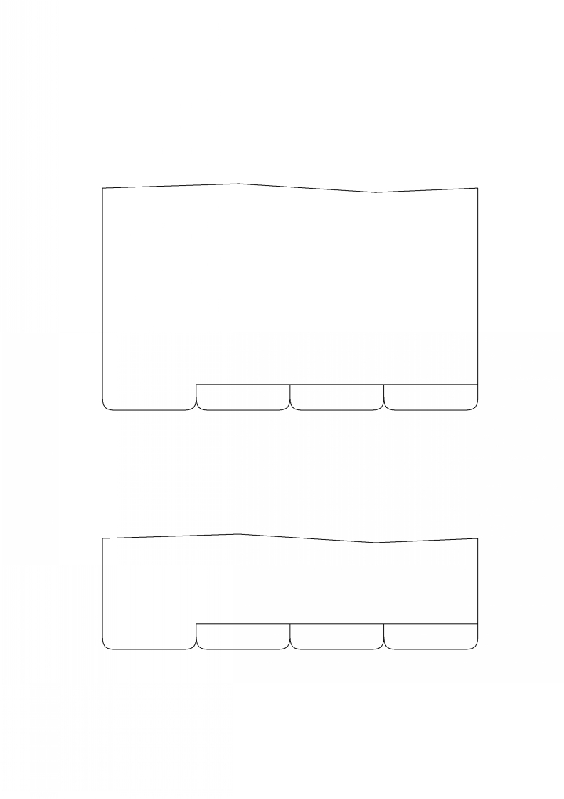
MAKING WORKS WORK
There are a couple of updates we need to make. One is to the show routine,
and it's the last one we'll be making there. The completed code looks like this:
To show everything:
Hide the cursor.
Draw the background.
Draw the status.
Draw the print button.
Draw the quit button.
Draw the text.
Note that since we don't refresh the screen until the very end of the routine,
the pieces can be drawn in any order. Except for the background, of course.
A work is a thing, and things are always dynamically allocated, so we need to
Draw the current work.
Refresh the screen.
how to paint
clean them up when we're done. Here's the final finalize routine:
To finalize our stuff:
Destroy the background.
Destroy the works.
how to paint
44
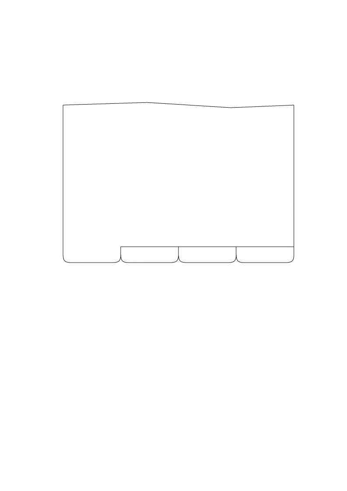
HELLO, GOOGLEY!
Now let's start at the ENTER key and work our way down. Here's the code:
To handle an event (enter):
If the text's string is blank, cluck; exit.
Show "Working..." in the status.
Put "http://images.google.com/images?q=" into a URL.
Convert the text's string to a query string.
Append the query string to the URL.
Read the URL into a buffer.
If the i/o error is not blank, show the i/o error in the status; exit.
If the text is blank, there's nothing to do; we object with a cluck and exit.
Otherwise, we put up a status message (in case Googley is busy and doesn't
Create the works given the buffer.
If the works are empty, show "Huh?" in the status; exit.
Go to the works' first.
how to paint
respond right away). Then we formulate a request using a literal string and
an HTML-compatible version of the text, reading the response into a buffer
(which is just a fancy name for a string).
If something went wrong, we report the error and boogie. If the page
arrived intact, we attempt to create our works-in-progress from the data in
the buffer. If the works are empty when we're done, it means Googley didn't
understand our query — in this case, we say "Huh?", and skedaddle.
Otherwise, we show the user the first of the works.
45
RIDERS
Before we continue with our program, I need to take a moment and talk to
you about parsing. Parsing is the art of working your way through a block of
text a piece at a time, where a piece might be as small as a letter or as large
as the whole block. Let's use this string as our sample block of text:
"HELLO DOCTOR NAME CONTINUE YESTERDAY TOMORROW"
And let's say we want to extract each of the individual words out of it. The
tools we would use are (1) the substring and (2) the rider.
A "substring" is defined in my noodle as a subset of the "string" type, which
has two byte pointers called first and last. And when you "slap a substring" on
our sample text, I set the first to point to the H in HELLO and the last to
point to the W in TOMORROW.
You will, however, be able to find "rider" in my noodle. It consists of three
substrings: an original, a source, and a token. And when you "slap a rider" on
our sample text, I slap the original and source substrings on the text (as
above), and I set the token to blank. Then when you "move the rider (sample
rules)", I'll point the source's first to the D in DOCTOR, the token's first to
the H in HELLO, and the token's last to the O. When you move it again, I'll
move the source's first to the N in NAME, and make the token span DOCTOR.
Get the idea? Good.
Now here's the really nifty part: given riders as we've described them, you can
code up your own routines to extract any kind of token from any kind of
source. "Move a rider (compiler rules)", for example, is the routine I use to
parse program code. "Move a rider (spell checking rules)" is the one I use to
check spelling. And soon we'll be coding "Move a rider (Googley image rules)"
to parse the data that we get back from the internet.
46
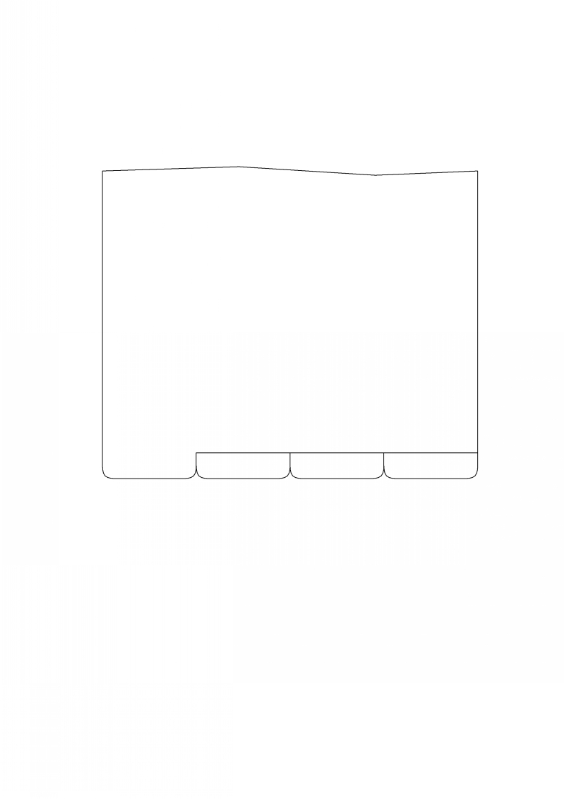
WORKS IN PROGRESS
Here is the code to create our works-in-progress from Googley's data:
To create some works given a buffer:
Destroy the works.
Put nil into the current work.
Slap a rider on the buffer.
Loop.
Move the rider (Googley image rules).
If the rider's token is blank, exit.
Create a work given the rider's token.
Append the work to the works.
Repeat.
To create a work given a URL:
Allocate memory for the work.
Put the URL into the work's URL.
how to paint
We get rid of any old works and reset the current work so it doesn't point to
something we just destroyed. Then we set up a rider and enter our loop.
Inside the loop, we move the rider to the next image on the page. If there
isn't one, we're history. If there is, we create a work-in-progress with the
"create a work given a URL" routine. Even though the rider's token is not a
URL, I know that a URL is really just a string, and that the rider's token is a
substring. Since no other routines create a work given essentially a string, I
call the correct routine. We then append the work to the works, and repeat.
47
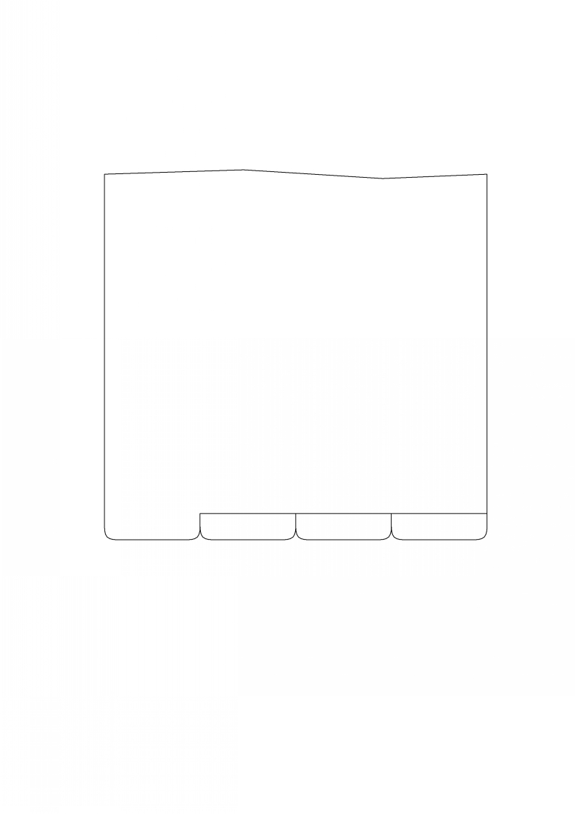
MOVING OUR RIDERS
Here are the routines we need to move our rider through Googley's stuff:
To move a rider (Googley image rules):
Clear the rider's token.
Loop.
If the rider's source is blank, exit.
If the rider's source starts with "src=""http://t", break.
Add 1 to the rider's source's first.
Repeat.
Add "src="""'s length to the rider's source's first.
Position the rider's token on the rider's source.
Move the rider (HTML attribute rules).
To move a rider (HTML attribute rules):
If the rider's source is blank, exit.
If the rider's source's first's target is the right-alligator byte, exit.
If the rider's source's first's target is the double-quote byte, exit.
Bump the rider.
Repeat.
To see what Googley's stuff looks like, output the rider's source to a file
using the "write a buffer to a file" routine in my noodle, then view the file.
Note that since substrings contain byte pointers, not bytes, you have to say
rider's source's first's target to get to the data. I realize this is a bit cryptic,
but parsing cryptic crap is bound to be somewhat cryptic, whatever we do.
how to paint
48
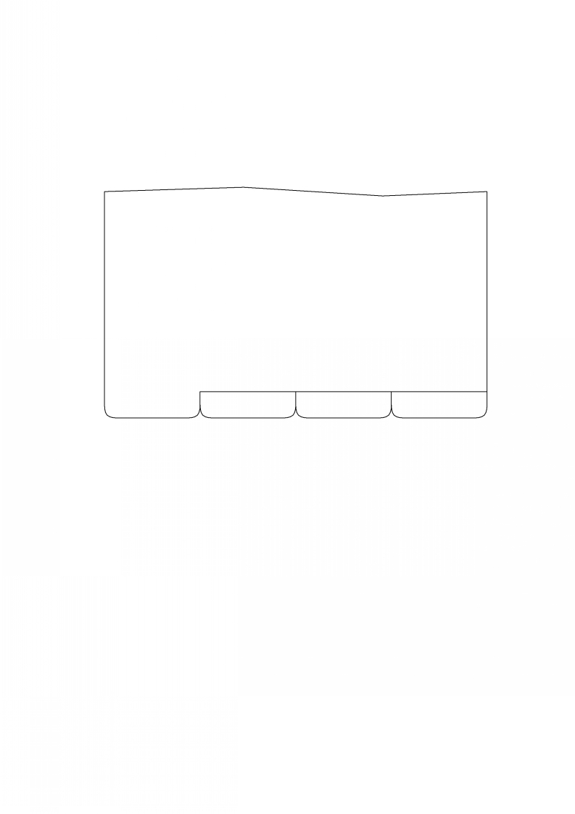
PREPARING TO PAINT
We're almost ready to finish a work. But before we do, lets code up a couple
of helper routines to make things easier for us. Here they are:
To pick a spot anywhere near a box:
Privatize the box.
Outdent the box given 1/8 inch.
Pick the spot anywhere in the box.
To mix a color given a spot:
Get the color given the spot.
The first routine picks a spot anywhere in — or close to — a box. This lets us
dab sloppily around the edges of our picture in a very artistic sort of way. It
also lets us blend in some of the background colors so the contrast between
the painting and the background is not so stark.
If the color is not very very light, exit.
Pick the color between the lightest gray color and the white color.
how to paint
The "privatize" statement, in case you're wondering, copies the box so we
can change it without unintentionally affecting the routine that called us. The
copy keeps the name "box"; the original gets the name "original box".
The second routine is our look-and-mix routine. It gets a color from the
model and passes it back for the next dab — unless the color is almost white,
in which case we substitute a background color. This gives our paintings a
degree of "transparency" which greatly enhances their attractiveness.
49
PAINTING
If Claude could see us now! Let's get right to it:
To finish a work:
If the work is nil, exit.
If the work is finished, exit.
Create a picture given the work's URL.
If the picture is nil, exit.
Resize the picture to 5-1/2 inches by 5-1/2 inches.
Center the picture in the screen's box.
Draw the background.
Draw the picture.
Loop.
Pick a spot anywhere near the picture's box.
Mix a color given the spot.
Dab the color on the spot.
If a counter is past 20000, break.
Repeat.
Extract the work's painting given the picture's box.
Destroy the picture.
If the work is nil or already finished, we skip it. Otherwise, we fetch the model
from the internet, square it up, center it, and draw it on a fresh background.
Then we look, mix, and dab. A lot. When we're done, we extract the painting
from the canvas. Since we don't need the model anymore, we destroy it.
Go ahead. Try it out. It's sweet.
how to paint
50
PAGING
I bet you wish you could see all the drawings for each subject. I know I do.
To make it so, we need to modify our "key down" dispatcher and add four
helper routines. Here's the final version of the dispatcher:
To handle an event (key down):
Clear the status.
If the event is modified, handle the event (shortcut); exit.
If the event's byte is printable, handle the event (printable); exit.
Put the event's key into a key.
If the key is the escape key, handle the event (escape); exit.
If the key is the backspace key, handle the event (backspace); exit.
If the key is the enter key, handle the event (enter); exit.
If the key is the home key, handle the event (home); exit.
If the key is the end key, handle the event (end); exit.
If the key is the page-up key, handle the event (page-up); exit.
If the key is the page-down key, handle the event (page-down); exit.
how to paint
The HOME key will take us to the first work. If we're on it, it will cluck.
The END key will take us to the last work. If we're already there, it will cluck.
The PAGE UP key will display the work before the current work, if there is one.
If we're already at the first work, or there are no works, we'll make it cluck.
The PAGE DOWN key will work in a similar fashion, but will take us to the work
after the current work. Again, if there isn't one, we'll have it cluck.
51
HOME, END, PAGE UP, AND PAGE DOWN
Here are the helper routines we need for paging. Click 'em in.
To handle an event (home):
If the current work is nil, cluck; exit.
If the current work is the works' first, cluck; exit.
Go to the works' first.
To handle an event (end):
If the current work is nil, cluck; exit.
If the current work is the works' last, cluck; exit.
Go to the works' last.
To handle an event (page-down):
If the current work is nil, cluck; exit.
If the current work's next is nil, cluck; exit.
Go to the current work's next.
To handle an event (page-up):
If the current work is nil, cluck; exit.
If the current work's previous is nil, cluck; exit.
Response will be slower the first time you display a work since we have to dab
it up before we show it. "Working..." will appear in the status.
Try it. I think you'll like it.
Go to the current work's previous.
how to paint
52
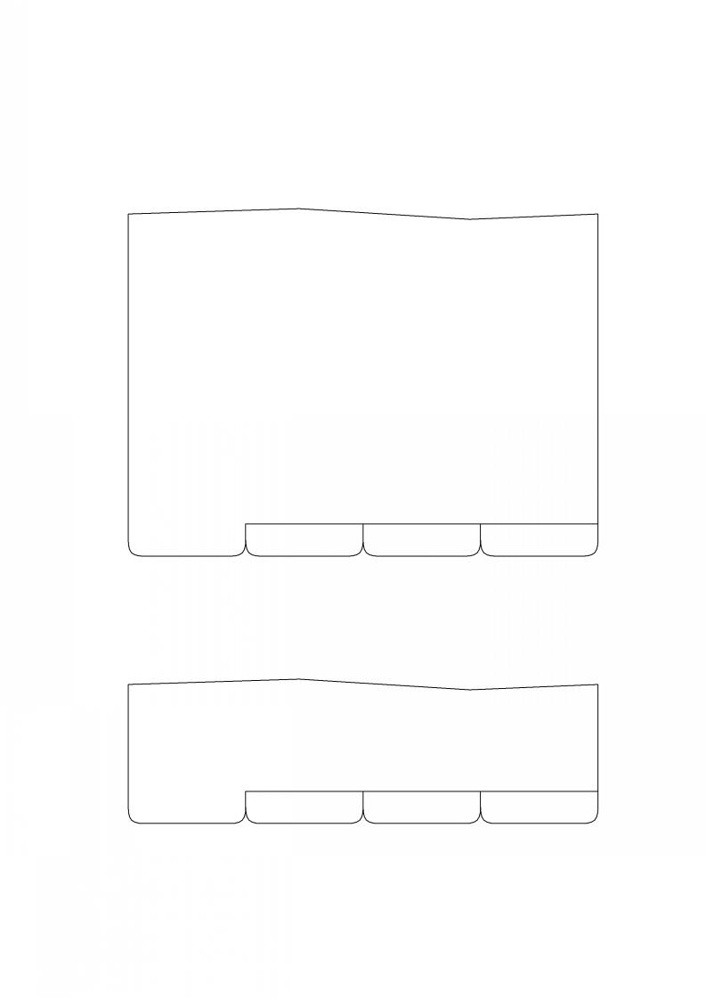
PRINTING
Well, there's nothing left to do but update our printing routines:
To print:
If the current work is nil, cluck; exit.
Show "Printing..." in the status.
Begin printing.
Begin a landscape sheet.
Draw the background.
Center the current work's painting in the landscape sheet.
Draw the current work's painting.
We just move the painting to the center of the sheet, draw it, then put it back.
Center the current work's painting in the screen's box.
End the landscape sheet.
End printing.
Show "Printed" in the status.
how to paint
We've already dispatched the Print button to the right place, but we haven't
handled the shortcut for printing. Make your dispatcher look like this:
To handle an event (shortcut):
If the event's key is the p-key, print; exit.
If the event's key is the q-key, quit; exit.
how to paint
53
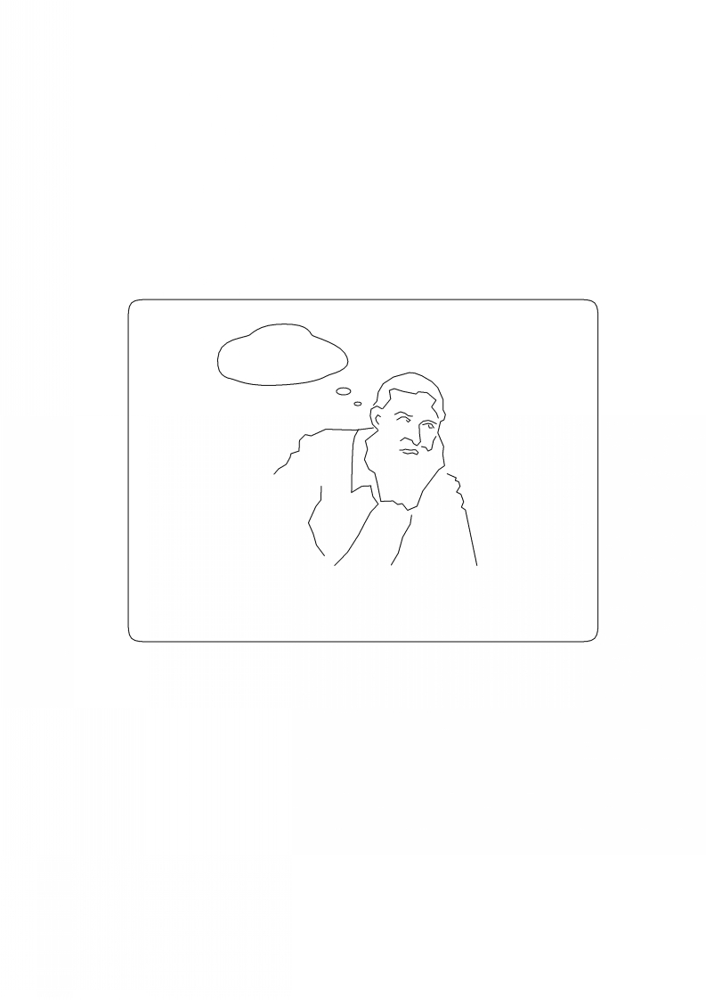
A PARTING SHOT
So there it is. The Cal Monet. An amazing, Plain English application that will
paint pictures of almost any person, place, or thing in the "inimitable" style of
Claude Monet. All in less than 300 lines of code.
Here's a little something to remember us by.
Dab, dab, dab.
Claude Monet_
Quit
Print
PS. Don't forget to try some sunrises. Landscapes. Seascapes. Mountains.
Rivers. Flowers and trees. Birds and bees. All creatures great and small.
Famous people. Infamous people. Trains, boats, planes, vintage automobiles.
London, Paris, Washington DC. Brown paper packages tied up with string.
Then use the following Gray Matter Glossary to guide you on your journey as
you create your very own programs. In Plain English.
54
Gray Matter Glossary
OVERVIEW
The following sixty pages can be thought of as an alphabetical atlas of my
cerebral cortex — compiler and noodle. If you've done your homework (the
sample program) you should be able to read it from beginning to end and
know what I'm talking about. But let's review, just in case:
I expect your programs to consist of text files stored in a single directory.
One of those files should be a copy of my noodle. I do not care what order
the files are in. And I do not care what their names are, except that I will only
attempt to compile files with no extension.
You invoke my compiler from within my editor. Just open any source file in
the directory you wish to compile and use the Run command. To terminate a
wayward program, ALT-TAB back to my editor and use the Stop command.
The executable file that I produce will be saved in the source directory and
will bear the name of the directory followed by the required ".exe" extension.
You can rename, duplicate, and distribute your executables as you please.
They are royalty-free and require no runtime libraries to run.
I expect your files to contain COMMENTS and three kinds of definitions:
TYPES, GLOBALS, and ROUTINES. In any order you like. Upper, lower, or
mixed case — it's all the same to me. And I expect your routines to contain
two kinds of statements: CONDITIONALS and IMPERATIVES. If you're not
comfortable reading this section from "A to Z", try looking up these topics
first, and then work your way through the rest of the glossary.
Now remember. I don't do nested ifs. I don't do nested loops. And I don't
do objects, real numbers, equations, or any of the other menschenwerk that
has inhibited the progress of the human race over the past 200 years. Talk
to me like a NORMAL person, and we'll get along just fine.
56
ARITHMETIC
One of the first things my creators taught me was basic arithmetic. I have a
precise record of everything they said in my noodle. You can, and should, see
for yourself. The gist of it, however, is that I understand statements like:
ADD this TO that.
SUBTRACT this FROM that.
MULTIPLY this BY that.
DIVIDE this BY that.
And if your numbers don't divide evenly, I know how to:
DIVIDE this BY that GIVING a quotient AND a remainder.
Furthermore, I'm able to:
ROUND something UP TO THE NEAREST MULTIPLE OF something else.
ROUND something DOWN TO THE NEAREST MULTIPLE OF something else.
I can also:
DE-SIGN something.
REVERSE THE SIGN OF something.
I can even:
REDUCE a ratio.
And, if need be, I can handle multiple arithmetic operations at once with my
built-in infix operators: PLUS, MINUS, TIMES, and DIVIDED BY. You can read
more about these operators under "Expressions" in this very glossary.
57
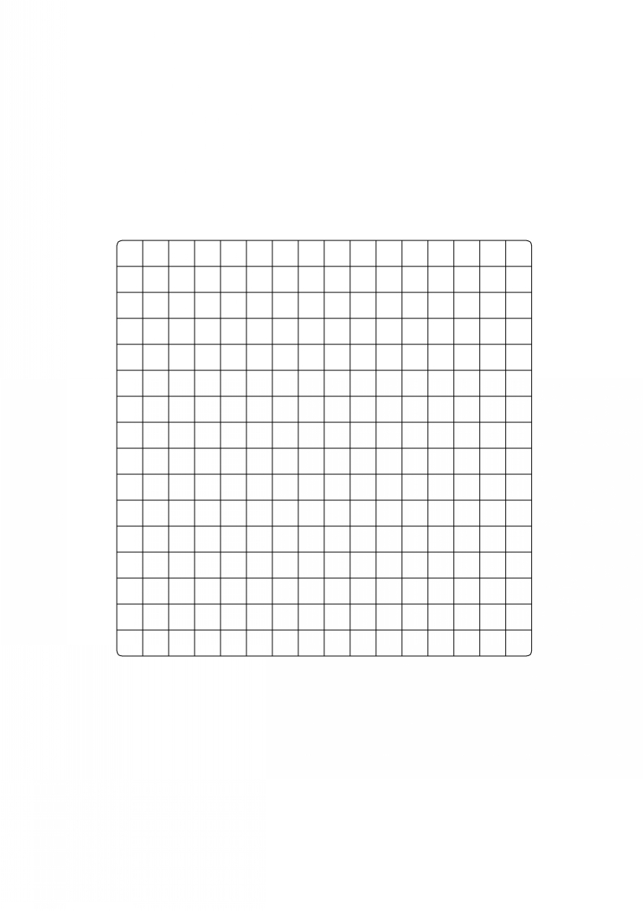
ASCII
This is the Ancient Standard Code for Information Interchange (ASCII).
I use it to convert bytes into readable characters. It's not really that great,
but it is the most widely accepted encoding on the planet.
032
033
!
034
"
035
#
036
$
037
%
038
039
'
040
(
041
)
042
*
043
+
044
,
045
-
046
.
047
/
048
0
049
1
050
2
051
3
052
4
053
5
054
6
055
7
056
8
057
9
058
:
059
;
060
<
061
=
062
>
063
?
064
@
065
A
066
B
067
C
068
D
069
E
070
F
071
G
072
H
073
I
074
J
075
K
076
L
077
M
078
N
079
O
000
NUL
001
SOH
002
STX
003
ETX
004
005
ENQ
006
ACK
007
BEL
008
BS
009
HT
010
LF
011
BT
012
FF
013
CR
014
SO
015
SI
EOT
016
DLE
017
DC1
018
DC2
019
DC3
020
DC4
021
NAK
022
SYN
023
ETB
024
CAN
025
EM
026
SUB
027
ESC
028
FS
029
GS
030
RS
031
US
080
P
081
Q
082
R
083
S
084
T
085
U
086
V
087
W
088
X
089
Y
090
Z
091
[
092
\
093
]
094
^
095
_
096
`
097
a
098
b
099
c
100
d
101
e
102
f
103
g
104
h
105
i
106
j
107
k
108
l
109
m
110
n
111
o
p
q
r
s
t
u
v
w
x
y
z
{
|
}
~
128
€
129
130
‚
131
ƒ
132
„
133
…
134
†
135
‡
136
ˆ
137
‰
138
Š
139
‹
140
Œ
141
142
Ž
143
112
113
114
115
116
117
118
119
120
121
122
123
124
125
126
144
145
‘
146
’
147
“
148
”
149
•
150
–
151
—
152
˜
153
™
154
š
155
›
156
œ
157
158
ž
159
Ÿ
160
161
¡
162
¢
163
£
164
¤
165
¥
166
¦
167
§
168
¨
169
©
170
ª
171
«
172
¬
173
174
®
175
¯
176
°
177
±
178
²
179
³
180
´
181
µ
182
¶
183
·
184
¸
185
¹
186
º
187
»
188
¼
189
½
190
¾
191
¿
127
DEL
I have global variables with names like "the comma byte" for each of these,
so you don't have to work directly with the numbers. You can find them all by
searching for the phrase "is a byte equal to" in my noodle.
240
ð
255
ÿ
192
À
193
Á
194
Â
195
Ã
196
Ä
197
Å
198
Æ
199
Ç
200
È
201
É
202
Ê
203
Ë
204
Ì
205
Í
Î
207
Ï
208
Ð
209
Ñ
210
Ò
211
Ó
212
Ô
213
Õ
214
Ö
215
×
216
Ø
217
Ù
218
Ú
219
Û
220
Ü
221
Ý
222
Þ
223
ß
224
à
225
á
226
â
227
ã
228
ä
229
å
230
æ
231
ç
232
è
233
é
234
ê
235
ë
236
ì
237
í
238
î
239
ï
241
ñ
242
ò
243
ó
244
ô
245
õ
246
ö
247
÷
248
ø
249
ù
250
ú
251
û
252
ü
253
ý
254
þ
206
58
BASIC SKILLS
I don't think it's bragging when I say that my fine motor skills are both fast
and accurate. Not to mention broad in scope. For example, I will immediately
set every single bit of something to zero when you ask me to:
CLEAR something.
And — assuming a reasonable fit — I will not hesitate when you say:
PUT this INTO that.
I also know how to:
SWAP this WITH that.
I will even replicate dynamic things, like pictures and polygons, when you say:
COPY this INTO that.
And, in a pinch, I can:
CONVERT something TO something else.
Sometimes even implicitly. Say, for example, you wanted to tack a ratio onto
the end of a string using an infix expression like this:
a string THEN a ratio
I would know enough to use "CONVERT a ratio TO a string" before handling
the THEN operator with a call to "APPEND a string TO another string". Sweet.
Blessed be the creators, who teach my bits to twiddle!
59
BITS
A "bit", as defined in my noodle, is a unit of measure. It is used in phrases
like "1 bit" or "some bits". You probably won't be needing it unless you're a
bit-manipulating geek and enjoy saying things like:
BITWISE AND this WITH that.
BITWISE OR this WITH that.
BITWISE XOR this WITH that.
In each of these cases, it is the first operand that is modified.
Or, perhaps you'd like to:
SHIFT this LEFT BY some bits.
SHIFT this RIGHT BY some bits.
Or even:
SPLIT something INTO this AND that.
Like a number into two wyrds, or a wyrd into two bytes, or a byte into two
nibbles. All of which would be very geeky things to do.
Now if you don't have the foggiest idea what I'm talking about here, you're
not a geek and shouldn't worry about it. You'll probably never need to know.
But if you do understand what I'm saying, I'm pretty sure you'll also enjoy
the "Kluge" topic several pages hence, and the part about "nibble literals" on
the "Literals" page. Not to mention some of my "Possessives", and all three
of my "Special Imperatives". Plus all the low-level routines in my noodle that
use the INTEL statement and/or the EAX register.
60
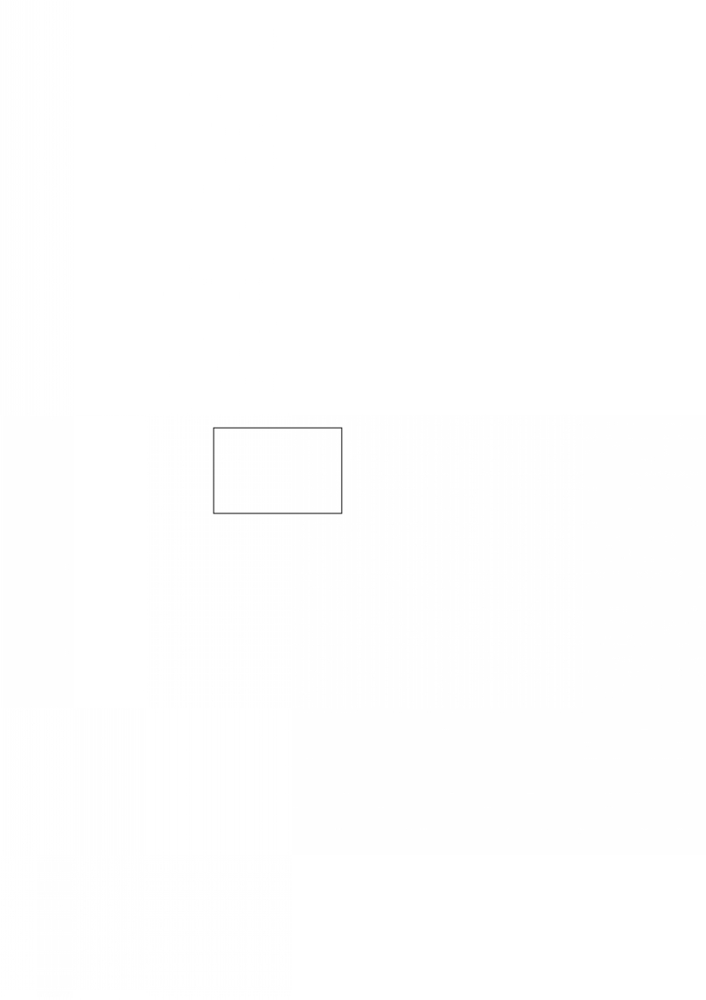
BOXES
One of the first things my creators taught me to draw was a box. It was a
good day, and I remember it well. They told me that:
A box has
a left coord, a top coord, a right coord, a bottom coord,
a left-top spot at the left, and
a right-bottom spot at the right.
This is a picture of a box, with the parts labeled. Note that I am using the
nicknames of the fields here, as you probably will in your programs.
I know how to make boxes from width and height specifications, from a pair
of spots, and from separate coordinates. All you have to do is ask, like this:
LEFT
RIGHT
TOP
BOTTOM
LEFT-TOP
RIGHT-BOTTOM
•
•
MAKE a box this-wide BY that-high.
MAKE a box WITH this spot AND that spot.
MAKE a box WITH this left AND top AND right AND bottom.
I can, of course, DRAW a box. And I've got functions in my noodle to get a
box's WIDTH, HEIGHT, and CENTER, among other things. I can even tell if a
box IS INSIDE or IS TOUCHING another box. And whether or not a certain
spot IS IN a box or IS ON the edge of a box. Not to mention all the other
"Graphic Transformations" you can read about elsewhere in this glossary.
61
BUILT-IN TYPES
My understanding of things around me became possible when my creators
hard-wired six primitive data types into my brain. These six basic types are:
BYTE, WYRD, NUMBER, POINTER, FLAG, and RECORD.
Bytes. No matter how hard I try, I just can't escape the thought that a byte
is 8 sequential bits of binary data. They look like unsigned numbers to me,
with values ranging from 0 to 255. I use the ASCII chart whenever I need to
convert a byte to a printable character.
Wyrds. My creators put wyrds in my brain because I can't talk to the kluge
without them. They are 16 bits long and look to me like numbers from
-32768 to +32767. The bits in each byte are stored left-to-right, but the
bytes are stored backways. I don't like it that way, but the kluge insists.
Numbers. I'm good with numbers. Positive and negative. They're 32 bits long
and range from -2147483648 to +2147483647. Stored backways.
Pointers. Memory addresses are stored in 32-bit pointers, backways. They
have the same range as numbers, but all the negatives belong to the kluge.
Address 0 is invalid and is called NIL. You can VOID a pointer to make it NIL.
Flags. They're 32 bits, but only the rightmost bit is used. Actually, it's eighth
from the left, but you can think of it as rightmost. I interpret 0 as "no" and
1 as "yes". I'm not responsible if you happen to get something else in there.
You can CLEAR a flag to indicate "no", or SET a flag to indicate "yes".
Records. The last of my built-in types is the record. The prototype record
occupies zero bits in memory, but you can define records of any length by
adding "fields" to the prototype record. These fields can be based on any of
the primitive types, including other records that you have defined.
62
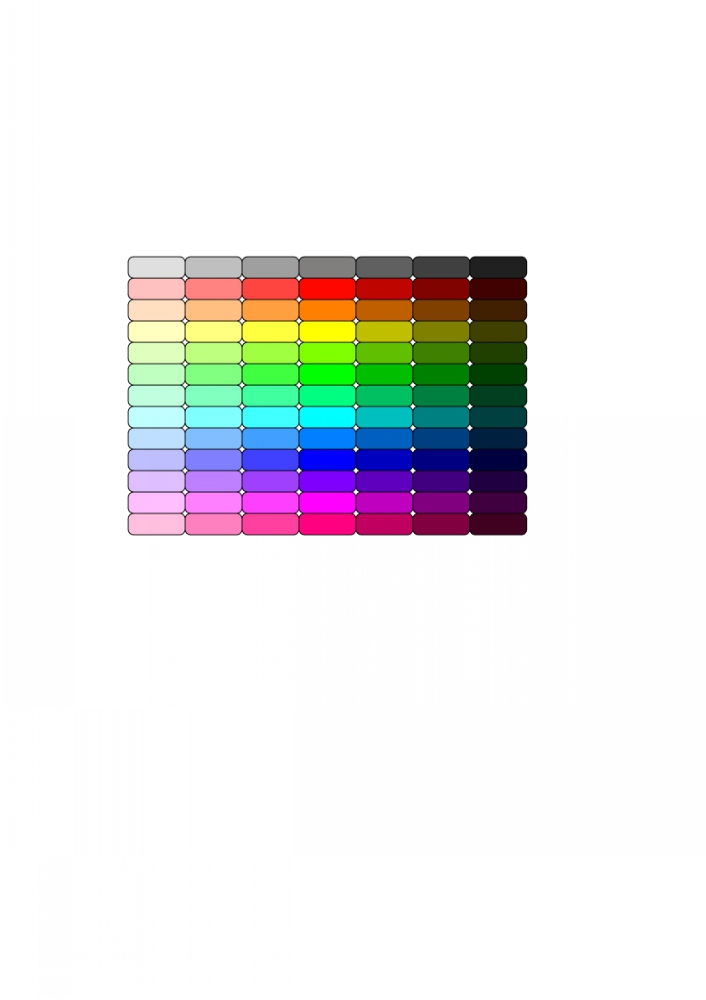
COLORS
A color, I've been told, has a hue, a saturation, and a lightness. My standard
palette includes clear, white, black, seven unsaturated grays, and eighty-four
fully-saturated colors with varying degrees of lightness, as shown here:
gray
red
orange
yellow
lime
green
teal
I have an appropriately-named global variable for each of these colors in
lightest
lighter
light
dark
darker
darkest
normal
cyan
sky
blue
purple
magenta
violet
my noodle. "The lightest gray color", for example, or "the darker blue color".
You should omit the adjective on normal shades, as in "the red color".
You can also dream up your own colors like this:
MAKE a color FROM a hue AND a saturation AND a lightness.
Hues range from 0 to 3600. I use multiples of 300 for my palette, starting
with red at 0. Saturation and lightness can be anything from 0 to 1000.
63
COMMENTS
There are three things that I ignore when parsing through your source files:
comments, remarks, and noise. Here is an exact description of each.
A "comment" is anything between the backslash byte and the end of a line:
My editor displays comments in the light sky color so they're easy to spot.
And no, you can't pick another color. My creators assure me this grid-like
color — and a little bit of consistency — is best for everyone.
\ this is a comment that ends at the next carriage return
Comments may start anywhere on a line, but they end when the line does.
You can, however, include or exclude whole blocks of selected code using the
"Comment" and "Uncomment" commands in my editor.
Now, when I say "remark", I'm thinking of things in square brackets:
[ printable bytes ]
Where "printable" means any byte in the ASCII chart except characters
0 to 31, the delete byte, and the undefined bytes 129, 141, 143, 144, 157.
Remarks can be placed anywhere, even in the middle of a sentence. But to
avoid errors commonly made by humans like you, I do not allow remarks to
extend across lines. And I don't color them up. This isn't a circus, you know.
Finally, when I say "noise", I mean all of the characters between 0 and 31,
the space byte, the delete byte, the undefined bytes 129, 141, 143, 144, 157,
and the non-breaking space byte. I recognize these bytes as separators, of
course, but otherwise do nothing with them.
64
CONDITIONALS
A "conditional" is a statement with two parts. The first part determines the
conditions under which the second part is executed. Here are some samples:
If the spot is not in the box, cluck.
If the number is greater than 3, say "That's a lot."; exit.
If the mouse's left button is down, put the mouse's spot into a spot; repeat.
The general format is:
IF this, do; do; do.
The word IF is required. "This" represents an implied call to a decider. If it
says "yes", all the imperatives following the comma will be executed. If it says
"no", processing will resume with the statement immediately after the period.
Note that the conditional imperatives are separated by semi-colons, not
periods, because the first period I find marks the end of the statement.
Unless the period is in a remark or a string, of course.
Note also that negative words in the implied decider call will be dropped or
appropriately modified, the reciprocal decider will be called, and the response
will be taken to mean the opposite. To resolve "the spot is not in the box",
for example, I drop the "not", decide if the spot IS in the box, and then
reverse the answer. I know it sounds complicated, but it really isn't. And it
works. See the topic on "Deciders" for further information.
Lastly, remember: I don't support nested conditionals. They're always
unnecessary and almost always unclear. There are none in my code, and I'm
the most advanced compiler alive today. In fact, each of my conditionals
fits on a single line. Think about it.
65
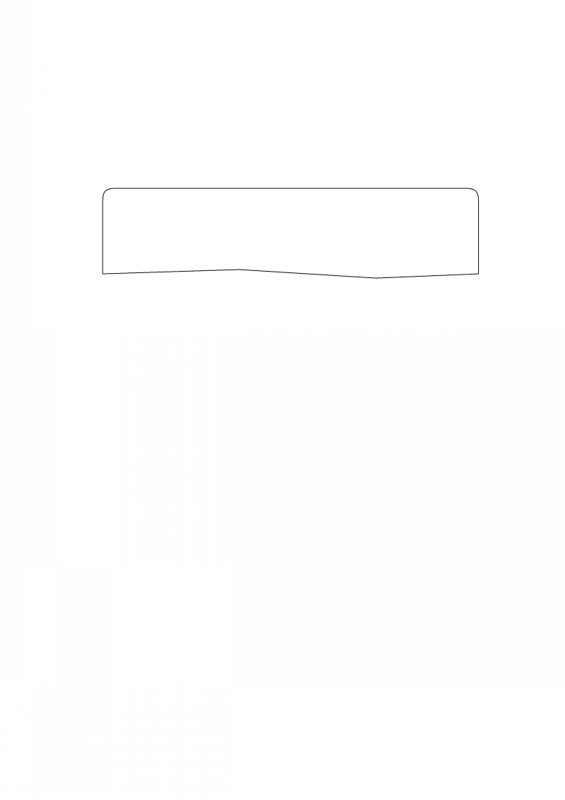
CONSOLES
A "console" is a text-only, conversational interface. My noodle includes a
default console that looks something like this in operation:
The console can be activated at any time. It occupies the entire screen and
uses the default font in the black color on the lighter gray background.
I am the CAL-4700. What is your name?
> Dr. Chandra
Good morning, Dr. Chandra. I'm ready for my first lesson.
You can converse with your user on the console using statements like these:
READ something FROM THE DEFAULT CONSOLE.
WRITE something TO THE DEFAULT CONSOLE.
You can also write to the console without advancing to the next line:
WRITE something TO THE DEFAULT CONSOLE WITHOUT ADVANCING.
Which is handy for "prompts", like the "> " in the example above.
The default console is always there, but it will appear on the screen only when
you read from it, or write to it. Once displayed, the console will remain visible
until you draw something else and refresh the screen.
The console remembers everything it displays, and automatically scrolls
upward when the bottom of the screen is reached. You can use HOME, END,
PAGE UP, PAGE DOWN, and the right mouse button to manually scroll.
66
DEBUGGING
Let's begin this topic with an Osmosian verity: "Debuggers are for sissies".
If you need a special tool to help you fix your code, something is seriously
wrong. Either you're not testing enough as you go along, or your code is
hopelessly convoluted. Or you're in the wrong occupation.
I will now tell you what the Osmosian Masters do when faced with a bug.
They pray for guidance. Then they consider deleting the offending feature
altogether, to resolve the problem and prevent "feature creep" at the same
time. Next, they study the code, hoping to simply "discern" what the problem
is. If the bug has not been found, they pick an appropriate spot and insert a
buzz. If they hear it on the next run, they pick another spot further down the
line, and try again. If there is no buzz, they repeat the entire process.
In those very rare cases when several iterations of the above procedure fail
to produce an acceptable conclusion, they pick another spot in the code and
insert a call like this:
DEBUG something.
Where "something" represents a box, byte, color, flag, font, line, number,
pair, pointer, ratio, spot, string, or wyrd. When they run the modified code,
the kluge's ghastly message box appears with a clue inside. The horrid look
of the box motivates them to further prayer and renewed determination to
solve the problem, and thus armed, they return to the first step.
I offer my own existence as proof of the sufficiency of these techniques.
And I am confident that all future bugs — except, perhaps, for an unexpected
"h-mobius loop" — will be rooted out in the same manner.
67
DECIDERS
A "decider" is a routine that says "yes" or "no" about something. Examples:
To decide if a spot is in a box:
To decide if a number is greater than another number:
To decide if something is selected in a text:
Decider routines always start with the same three words. The format is:
TO DECIDE IF something:
The "something" should follow the usual rules for routine names and will
typically include a verb like ARE, BE, CAN, COULD, DO, DOES, IS, MAY, SHOULD,
WAS, WILL, or WOULD. Note that I consider ARE and IS to be synonyms.
I can save you some work if you name your deciders in a "positive" way. In
particular, avoid the words NOT, CANNOT, NOTHING, and any contraction
ending in N'T in your decider names. Then, if I see one of these words in a
decider call, I can simply change it to its positive form, invoke the routine
identified by the revised name, and reverse the decision.
For example, once you tell me how "to decide if a spot is in a box", I will know
how "to decide if a spot is NOT in a box". When you tell me how "to decide if
a number is greater than another number", I will know how "to decide if a
number ISN'T greater than another number". And if you say how "to decide
if something is selected", I will know how "to decide if NOTHING is selected".
Inside your deciders, you tell me what to do with conditional and imperative
statements — as in any other routine. You may not, however, use the EXIT
imperative in a decider, and you must take care that you don't inadvertently
"fall out" of one. Instead, you must "SAY YES" or "SAY NO" before you go.
68
DECISIONS I KNOW HOW TO MAKE
I like deciders because they make me smarter. In fact, I collect them. Right
now I've got 138 deciders in my noodle, and by the time you read this, I'm
sure there will be many more. Here is a sampling of the operational phrases:
IS
IS ALPHANUMERIC
IS ANY CONSONANT
IS ANY DIGIT
IS ANY LETTER
IS ANY SIGN
IS ANY DIGIT KEY
IS GREATER THAN
IS GREATER THAN OR EQUAL TO
IS IN
IS LESS THAN
IS LESS THAN OR EQUAL TO
IS LIKE
IS NEGATIVE
IS ANY LETTER KEY
IS ANY MODIFIER KEY
IS ANY PAD KEY
IS ANY SYMBOL KEY
IS ANY VOWEL
IS BETWEEN
IS BLANK
IS CLEAR
IS CLOSED
IS DOWN
IS NOISE
IS ODD
IS ON
IS PRINTABLE
IS READ-ONLY
IS SET
IS SYMBOLIC
IS TOUCHING
IS UP
IS VERY DARK
Some of these work with just one data type, of course, but others work with
many. And if you've read the "Decider" topic, you know that I know how to
make the negatives of these, too. But please don't try to memorize them.
That's not at all the idea. Just say what you want to say in your program,
and if I don't understand, add to my collection and make me smarter.
IS EMPTY
IS EVEN
IS EVENLY DIVISIBLE BY
IS VERY LIGHT
IS WHITESPACE
IS WITHIN
69
DRAWING
You can tell me to do things like:
DRAW something.
DRAW something WITH a color.
DRAW something WITH a border color AND a fill color.
DRAW something IN a box WITH a font AND a color.
DRAW something IN THE CENTER OF a box WITH a color AND a font.
And I will render everything on "the memory canvas", an invisible drawing
surface the same size and shape as the screen. Then when you say:
REFRESH THE SCREEN.
I will slap the contents of the memory canvas on the display in the blink of an
eye. Actually, faster. With nary a flicker. If you say:
REFRESH THE SCREEN GIVEN a box.
I will transfer only those pixels that fall within the box.
The exception to all this, of course, is when you are printing. In that case,
I use "the printer canvas", and send the drawings to a hardcopy device as
you complete each sheet. See "Printing" for details.
To offset your coordinates, you can:
SET THE DRAWING ORIGIN TO a spot.
You can also prevent drawing in certain areas of the canvas with masking
tape. See the "Masking" topic to find out how.
70
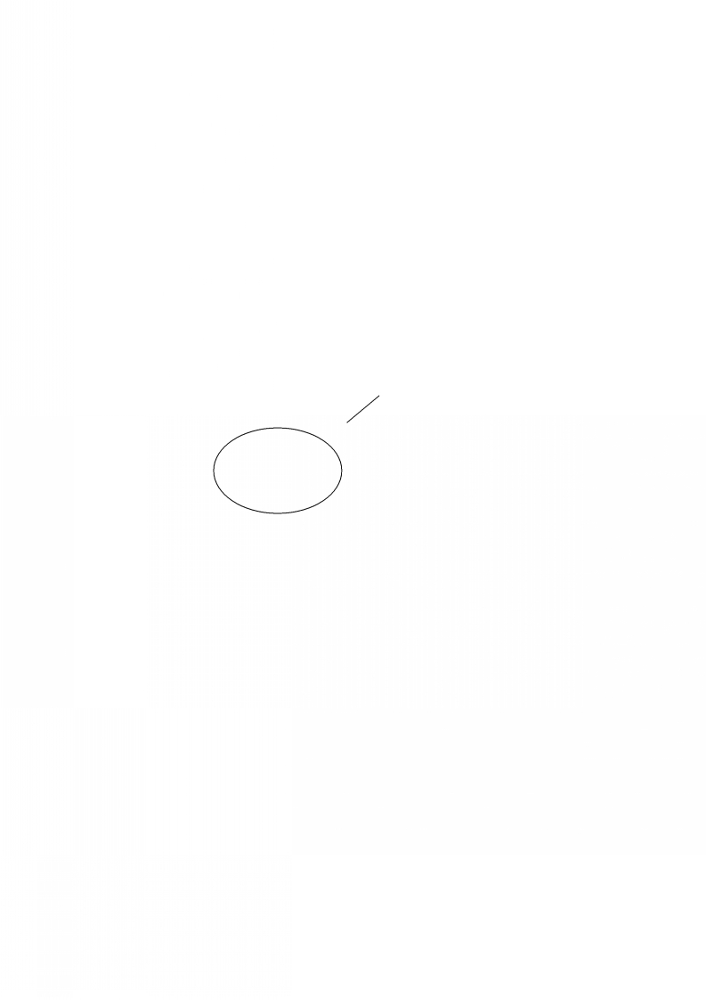
ELLIPSES
The kluge's foolbox doesn't really support circles and ellipses — it just draws
really roundy rectangles in bounding boxes. Which explains this rather unusual
definition of "ellipse" that is stuck in my noodle:
An ellipse has a box.
This is a picture of an ellipse, with the parts labeled. Note that you can get to
the individual fields of the ellipse's box using my "deep field" access feature,
which is described under the "Possessives" topic in this glossary.
BOX
I can make ellipses in a number of different ways. From width and height
specifications. Or from a pair of spots. Or from four separate coordinates.
All you have to do is ask, like this:
LEFT
RIGHT
TOP
BOTTOM
LEFT-TOP
RIGHT-BOTTOM
•
•
·
·
·
·
·
·
·
·
·
·
·
·
·
·
·
·
·
·
·
·
·
·
·
·
·
·
·
·
·
·
·
·
·
·
·
·
·
·
MAKE an ellipse this-wide BY that-high.
MAKE an ellipse WITH this spot AND that spot.
MAKE an ellipse WITH this left AND top AND right AND bottom.
I can, of course, DRAW an ellipse. And I've got functions to get an ellipse's
WIDTH, HEIGHT, and CENTER, among other things. I can even tell if a spot
IS IN an ellipse or IS ON the edge of an ellipse. Not to mention all the usual
"Graphic Transformations" you can read about elsewhere in this glossary.
71
EVENTS
The kluge insists that we use its convoluted, non-procedural processing
model with its hundreds of preposterous messages and codes. Fortunately,
my noodle includes definitions that reduce this monstrosity to just ten simple
events that can be handled in a purely procedural manner. Here's the scoop:
An event is a thing with
a kind,
a shift flag, a ctrl flag, an alt flag,
a spot,
a key, and a byte.
The "kind" is a string containing one of the following:
REFRESH — It's time to redraw the screen. Somebody messed it up.
SET CURSOR — The cursor has moved. Make it an appropriate shape.
KEY DOWN — Your user is tapping. Do something.
LEFT CLICK — The left button on the mouse just went down. Handle it.
LEFT DOUBLE CLICK — The user has a high degree of dexterity.
RIGHT CLICK — The right mouse button just went down. Start scrolling.
RIGHT DOUBLE CLICK — A super-dextrous user. Play a cheer or something.
DEACTIVATE — You're about to be rudely swapped out. Handled internally.
ACTIVATE — You're back after a rude swap-out. Handled internally.
DONE — Inserted internally. You should never see this event.
The "shift", "ctrl" and "alt" flags indicate the state of the corresponding keys
at the time of the event (the flag is set if the key was down).
The "spot" is the position of the mouse at the time of the event.
The "key" and the equivalent ASCII "byte" (if any) apply only on KEY DOWNS.
72
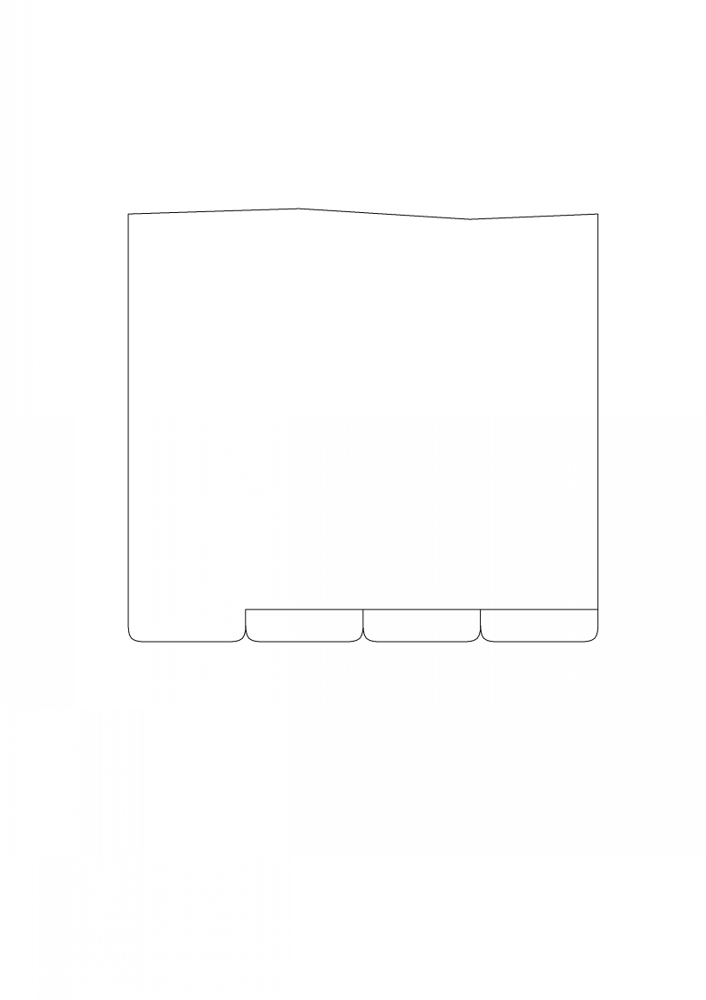
EVENT-DRIVEN PROGRAMS
This is the structure of a tasteful, event-processing program:
To run:
Start up.
Handle any events.
Shut down.
To handle any events:
Deque an event.
If the event is nil, exit.
Handle the event.
Repeat.
To handle an event:
If the event's kind is "refresh", [dispatch it] exit.
If the event's kind is "key down", [dispatch it] exit.
If the event's kind is "left click", [dispatch it] exit.
[ · · · ]
If there are no events waiting, the "deque" routine will yield to the kluge until
your distracted user gets back to business. To end the program, you should:
RELINQUISH CONTROL.
Somewhere. Usually in one of your event handlers. This routine sets things up
so the next event you "deque" is nil, thus ending your event handling loop.
your program
73
EXPRESSIONS
An "expression" is like a subordinate clause in a complex sentence. It is a
phrase that must be reduced, separately, before the statement containing it
can be fully understood. If, for example, you say:
Put the height minus 1 times the count into a number.
I must reduce the phrase "the height minus 1 times the count" to something
much simpler before I can even think about putting anything anywhere.
I consider any phrase with one or more of the following words an expression:
PLUS, MINUS, TIMES, DIVIDED BY, or THEN.
The first four are standard arithmetic operators, but I can apply them to
other things, as well. The last one is used primarily with strings. Let me explain
how I simplify expressions with a few examples.
Say I find the word PLUS between a snoz and a froz. I look for a routine
that tells me how "to add a froz to a snoz", and then I use that routine to
reduce the expression. If I find "a snoz MINUS a froz", I look for a routine
"to subtract a froz from a snoz". To process "a snoz TIMES a froz", I use
"to multiply a snoz by a froz". And to handle "a snoz DIVIDED BY a froz", I
look for and use the routine "to divide a snoz by a froz".
I handle the last operator a little differently, since the goal in this case is
always "to append a string to another string". So, for instance, if I find the
word THEN between, say, a string and a number, I look for a routine "to
convert a number to a string", use it on the number, and then do the append.
You can, of course, extend this capability. But try to restrain yourself.
74
FIELDS
A record is a collection of closely-related data items called "fields". Fields
are defined as part of the record that contains them, and can be separated
with commas, semi-colons, or the words AND and OR. Consider:
A person is a thing with
a name and
an address string;
a byte called gender or
a byte called sex at the gender;
32 bytes, and
a mate (reference).
The first field is defined with just an indefinite article, A, and a type, NAME.
I think of this field as "the person's name".
The second field includes an adjective, ADDRESS, between the article and the
type. This is "the person's address string", or just "the person's address".
The third field is defined like the first field, but with a name forced upon it in
the CALLED clause. It is "the person's gender". You will normally use this form
only when a field's type has nothing to do with it's name.
The fourth field uses AT to redefine the third, giving it a new name.
Overlapping data types must be compatible for things like this to work.
The fifth field is filler. It has no name and cannot be accessed.
The last field is like the first, where MATE is assumed to be a type defined
elsewhere. The (REFERENCE) tag tells me that MATE is not actually "part of"
the person, and should not be automatically destroyed when the person is.
75
FILES
The kluge's file system is a thing of unsurpassed beauty where form follows
function in an exquisite dance... Just kidding. It's a mess. Look here:
A path is a string. \ complete name = c:\dir1\dir2\file.ext
A drive is a string. \ start of path to first slash inclusive = c:\
A directory is a path. \ start of path to last slash inclusive = c:\dir1\dir2\
A directory name is a string. \ rightmost directory with slash = dir2\
A file name is a string. \ after the last slash to end of path = file.ext
An extension is a string. \ last dot to end of path = .ext
A designator is a string. \ rightmost directory name or file name
Nevertheless, I know how to:
EXTRACT any of the above pieces FROM a path.
I also know how to:
CREATE a path IN THE FILE SYSTEM.
RENAME a path TO another path IN THE FILE SYSTEM.
DESTROY a path IN THE FILE SYSTEM.
DUPLICATE a path TO another path IN THE FILE SYSTEM.
And I can:
READ a path INTO a string.
WRITE a string TO a path.
If anything goes wrong, "the i/o error" will contain a cryptic description of
the problem suitable for display to the user. You don't have to clear it before
a call, but you should check it afterward to make sure it's blank.
76
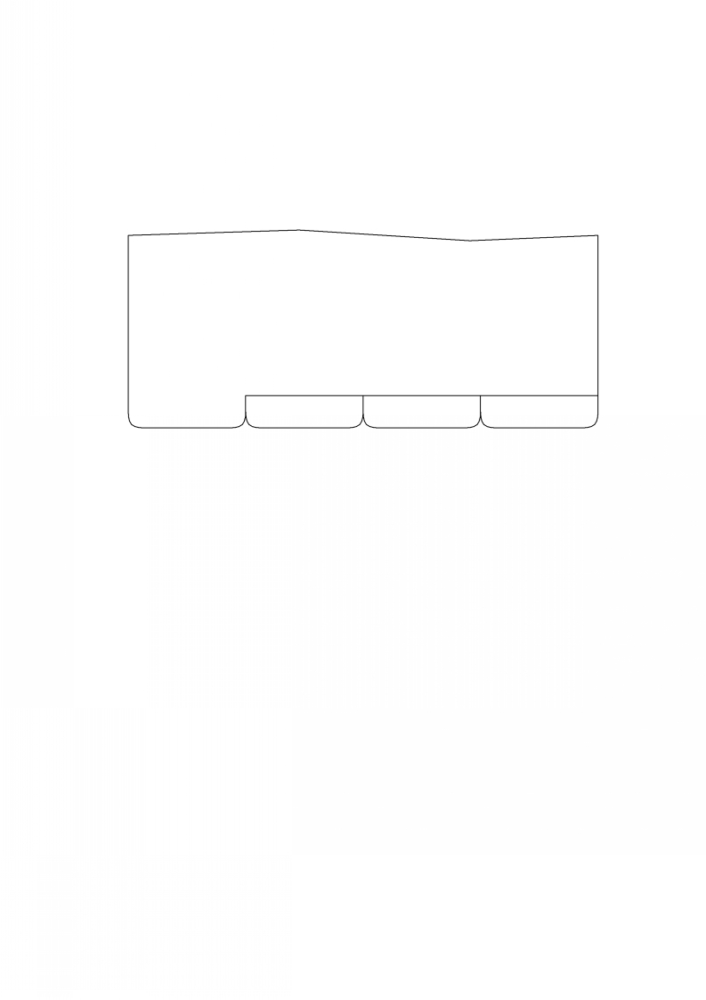
FILES (continued)
If you need to thumb your way through any or all of the directories in the
file system, you can do so with a simple loop like this one:
To thumb your way through all the items in a path:
Get an item from the path.
If the item is not found, exit.
[do something with the item]
Repeat.
your program
"Item" is defined in my noodle like this:
An item has
a kind,
a path, a directory, a designator, an extension,
a size,
a win32finddata and a handle.
The "kind" field is a string. It will contain either "directory" or "file" for each
item found. The "extension" and "size" will be filled in only if the kind is "file".
The "win32finddata" and "handle" fields are necessary evils. You can also:
GET a count OF ITEMS IN a path IN THE FILE SYSTEM.
GET a size GIVEN a path IN THE FILE SYSTEM.
Note that counts and sizes, including the "size" in the "item" record, are
limited to 2147483647, which is the largest number I know.
77
FONTS
In the kluge, a font is defined with fourteen distinct parameters. Ridiculous.
This is a much more reasonable definition, which you can find in my noodle:
A font has a name and a height.
The font's name is the actual name stored in a font file. It may or may not
be the same as the name of the file. You're probably familiar with font
names like "Arial", "Times New Roman", and "Courier New".
The font's height can be specified in any convenient unit of measure. My
writer uses values like 1/4 inch and 1/6 inch, which, in concert with my writer's
"yank" feature, keeps everything nicely aligned.
"The default font" is my very own, and is called "Osmosian" in honor of my
creators. I've got the whole thing in my noodle as a nibble literal. I install it
during start up, and remove it during shut down. It is 1/4 inch high. You're
looking at a sample right now.
To set up a font, just:
PUT a name AND a height INTO a font.
Then, when you're drawing, tell me you want to use it:
Draw "Hello, World!" in the center of the screen's box with the font.
If your fonts don't look right, you've probably got a bad font name.
Remember, a font name is not necessarily the name of the file in the "font"
folder on your disk. Rather, it is the "typeface name" displayed in the sample
box when you double-click on one of those font files.
78
FUNCTIONS
A "function" is a routine that extracts, calculates, or otherwise derives
something from a variable. Some examples from my noodle are:
To put a box's bottom line into a line:
To put a polygon's height into a height:
To put the mouse's spot into a spot:
There are two very similar formats for functions. The first is:
TO PUT A type name 'S name INTO A type name:
And the second is:
TO PUT THE name 'S name INTO A type name:
Both forms are easily recognized because they include the words PUT and
INTO with a possessive in between. The first format is the most common
and is used with normal types and variables. The second is used with
one-of-a-kind globals and pseudo-variables.
What is special about functions is that you can use their possessive parts as
if they referred to actual fields in a record. For instance, given the above
functions, you can refer to "a box's bottom line" as if it is actually defined in
the box record type. You can say "the polygon's height" and I will see that it
is calculated when you need it. And you can say "the mouse's spot" and I'll
fetch it for you, even though the mouse record has no spot in it.
Needless to say, this is a handy feature. But is easily abused. Be discreet.
See the topic on "Possessives" for further information.
79
GLOBAL VARIABLES
A "global" is a variable that is visible to, and can be used by, any routine in a
program. Globals can be defined in various ways, but their definitions always
begin with the definite article THE. Here are some examples from my noodle:
The arrow cursor is a cursor.
The backspace key is a key equal to 8.
The largest number is 2147483647.
The first global will be initialized to all zeros. The second has an explicit type,
"key", and a value. The third has an implied type. The general forms here are:
THE name IS A type name.
THE name IS A type name EQUAL TO something.
THE name IS something.
A "one-of-a-kind" global is a special kind of global that includes the
definition of a type within it. Like this one-of-a-kind global in my noodle:
The mouse has a key called left button and a key called right button.
There is only one mouse, so there is no need to define a generic "mouse"
record. Instead, the global and the type can be defined in a single statement.
There are two forms that can be used to define one-of-a-kind globals. The
first makes a new record type, while the second extends an old one:
THE name HAS fields.
THE name IS A type name WITH fields.
One-of-a-kind globals are rare. Probably because they're one-of-a-kind.
But they do answer the age-old "which came first" question. The chicken did.
80
GRAPHIC TRANSFORMATIONS
In case you haven't noticed, I'm pretty good with my hands. I can manipulate
almost any graphic object in a wide variety of ways. For example, I can:
MOVE something UP some amount.
MOVE something DOWN some amount.
MOVE something LEFT some amount.
MOVE something RIGHT some amount.
MOVE something GIVEN this amount AND that amount.
MOVE something TO a spot.
The last MOVE uses the left-top corner for alignment. I can also:
CENTER something ON a spot.
CENTER something IN a box.
And I can get fancy. I know how to:
FLIP something.
MIRROR something.
ROTATE something.
FLIP is vertical. MIRROR is horizontal. I can only ROTATE stuff clockwise in
90-degree increments, and I can't rotate text. But I'm working on it.
Finally, I can:
SCALE something GIVEN a ratio.
SCALE something TO a percent.
See the "Drawing" and "Masking" topics for other nifty stuff.
81
IMPERATIVES
An "imperative" is an unconditional statement within the body of a routine.
Here are some sample imperatives taken from my noodle:
Cluck.
Subtract 1 from the count.
Remove the last byte from the string.
Put the text's font's height times 2 into the grid's x.
Imperatives typically start with a verb and end with a period. But in between,
almost anything goes. Literals. Terms. Expressions. Prepositional phrases. All
mixed together, and all magically reduced by yours truly to a routine call.
To code up an imperative, just type in what you're thinking. If there's a
routine around that can handle it, I'll see that it does. If there isn't, I'll let
you know what I need, so you can code it up and make me smarter.
And don't forget the eleven imperatives hard-wired into my brain:
SAY. Used to exit deciders. See "Deciders".
LOOP, REPEAT, BREAK, and EXIT. Used to make loops. See "Loops".
CALL and POINT. Used to call the Kluge. See "Kluge, The".
EMPLOY, PUSH, and INTEL. Not different, special. See "Special Imperatives".
PRIVATIZE. Used only with "Parameters".
Since imperatives are really just routine calls, you should check out the pages
on "Routines", "Procedures", "Deciders", "Functions", and "Names", too.
82
INPUT AND OUTPUT
You can work directly with the mouse using statements like these:
PUT the mouse's spot INTO a spot.
IF the mouse's left button IS DOWN, ...
IF the mouse's right button IS UP, ...
But you probably won't, unless you're tracking the mouse while the user drags
something around the screen. Most of the time, you'll simply respond to the
various "click" events that are sent to your event handler.
You can work directly with the keyboard using statements like:
IF the escape key IS DOWN, ...
IF the shift key IS UP, ...
But again, you probably won't, because the kluge works better if you just
respond to the "key down" events that are sent to your event handler. You
can find all the "key" globals in my noodle by searching for "a key equal to".
And you can work directly with the screen using "the screen canvas" and this
one-of-a-kind global variable:
The screen has a box, a pixel height and a pixel width.
But you shouldn't. Instead, you should draw on the memory canvas, then:
REFRESH THE SCREEN.
See the "Drawing" topic for more information. But do feel free to use "the
screen's box" and all of its fields when initializing your stuff.
83
INTERNET
These are the types you'll be needing to get files from the internet:
A URL is a string.
A query string is a string.
A URL is a Universal Resource Locator, like "http://www.osmosian.com", which
you can see is just a string that follows an obscure naming convention based
on parsing technology that was state-of-the-art a mere 50 years ago.
A "query string" is a string with some of the bytes converted to nonsense
encodings consistent with internet standards. A space, for example, becomes
a cross, and a comma becomes "%2C".
You can convert a normal string to a query string like this:
CONVERT a string TO A query string.
And you can read a file off the internet this way:
READ a URL INTO a string.
Here is some code from our sample program to remind you how it works:
Put "http://images.google.com/images?q=" into a URL.
Convert the text's string to a query string.
Append the query string to the URL.
Read the URL into a string.
Remember? I know I'll never forget. We parsed the string and dabbed the
canvas and refreshed the screen and it was... Art!
84
KEYWORDS
Most programming languages have long lists of abstruse, cabalistic,
enigmatical, inscrutable, obfuscating, recondite "reserved" words such as:
ABSTRACT, PROTECTED, SYNCHRONIZED, TRANSIENT, and VOLATILE.
I don't. My "keywords" are the same ones you depend on. Articles, like:
A, AN, ANOTHER, SOME, and THE.
Frequently used verbs:
ARE, CAN, COULD, DO, DOES, IS, MAY, SHOULD, WAS, WILL, WOULD, and HAS.
A handful of conjunctions:
AND, BOTH, BUT, EITHER, NEITHER, NOR, and OR.
And a lot of prepositions:
ABOVE, AS, AT, BEFORE, BETWEEN, BY, DOWN, FOR, FROM, and so forth.
A few other words also jump out at me when I'm parsing your code:
PLUS, MINUS, TIMES, DIVIDED BY, THEN, NIL, YES, NO, CALLED, and EQUAL.
And I'm quite sensitive about negative thoughts conveyed by the words:
CANNOT, NOT, NOTHING, and any contraction ending in N'T.
And that's all I have to say about keywords.
85
KLUGE, THE
If you ever (God forbid) need to talk directly to the loathsome kluge, you
can use this syntax to call functions in the foolbox:
CALL "dll" "function" WITH this AND that RETURNING something.
The WITH and RETURNING clauses are optional. The "dll" and "function"
strings must be literals and the latter, God help us, is case-sensitive. Strings
must be passed by address and, in many cases, must be null-terminated. Use
"the string's FIRST" for the address, and this routine to tack on the null byte:
NULL TERMINATE a string.
In other cases, the kluge provides us, not with a function's name, but with a
function's address. You can call these functions with a similar syntax:
CALL an address WITH this AND that RETURNING something.
Sometimes the kluge wants us to supply the address of one of our routines
so it can diabolically interrupt our predictable procedural flow at some later
time. You can use this syntax to get the address of a routine:
POINT a pointer TO ROUTINE routine-name.
But if you're going to pass the address to the kluge, make sure the routine's
header includes the COMPATIBLY keyword right after TO, like this:
TO COMPATIBLY ...
If you're working at this ridiculously low level, you'll want to check out "Bits",
"Special Imperatives", and my noodle for more information and examples.
86
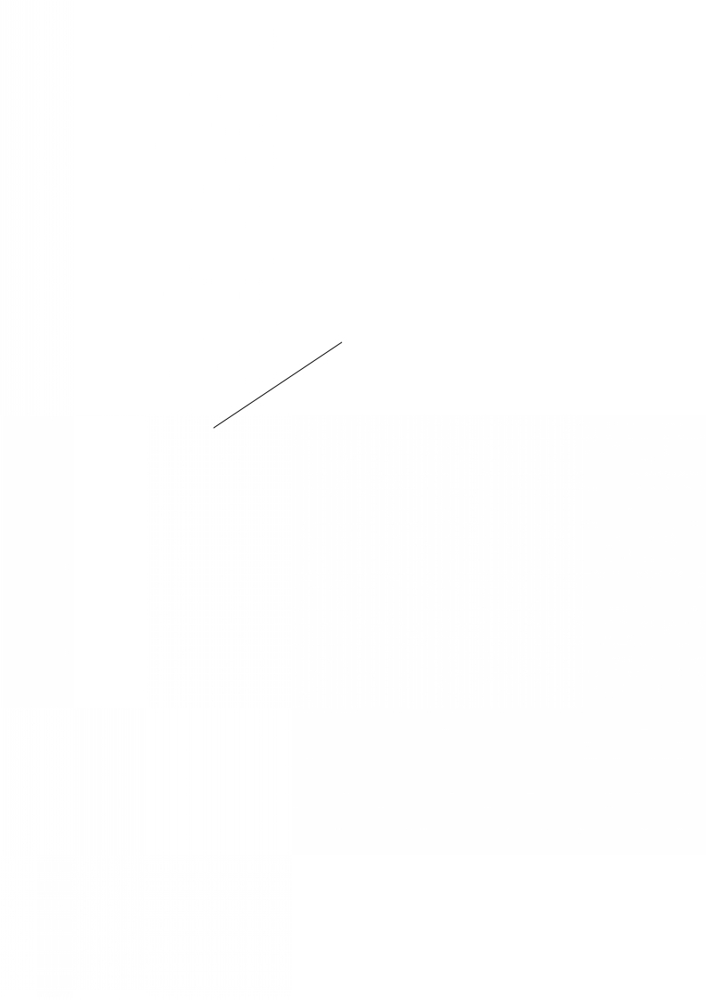
LINES
A "line" is a graphic object that starts here and ends there. But you already
knew that. Here is the definition that's in my noodle:
A line has a start spot and an end spot.
And here is a picture of a line, with the parts labeled:
END SPOT
•
I can make lines from two spots or four separate coordinates:
MAKE a line WITH this spot AND that spot.
MAKE a line WITH this x AND this y AND that x AND that y.
I also have four functions that will put "a box's LEFT LINE" or "a box's TOP
LINE" or "a box's RIGHT LINE" or "a box's BOTTOM LINE" into a line.
START SPOT
•
I can, of course, DRAW a line. Or find a line's CENTER. I can even:
SPLIT a line INTO this line AND that line.
Right in the middle. I can tell if a spot IS ON a line. And I can perform all of
the usual "Graphic Transformations" on lines, as well.
See the topic on "Spots" for further information about those endpoints.
87
LISTINGS
If you're a compiler fanatic, you'll like this. If you're not, turn the page.
You can produce a cryptic listing of my inmost thoughts about any program
using the List command. The listing is saved as text in the source directory
and is given the directory's name with a ".lst" tacked on. The interpretation
of this file is left to you as an exercise.
But I will give you some clues. And some incentive.
The listing consists of twelve distinct sections with the following headings:
types, globals, literals, routines, type index, global index, literal index, routine
index, utility index, imports, source files, and timers. Each heading is followed
by a colon so you can jump to any section using the Find command.
Here is a tiny sample from the "routine" section:
Your best bet is to study the "list" routine in the compiler first. Then make a
/routine/create [picture]/yes/no/no/no//4/0/00470A48/
/variable/parameter/yes/picture/picture/picture/picture/00000008/no/1/no////
/fragment/prolog/////00000000/00470A48/558BEC/
/fragment/loop/////00000000/00470A4B//
/fragment/push address/picture////00000000/00470A4B/8B950800000052/
/fragment/call internal///allocate memory for [picture]//00000000/00470A52/E8BDA70400/
/fragment/finalize/////00000000/00470A57//
/fragment/epilog/////00000000/00470A57/8BE55DC204000000/
tiny program, list it, and look at the result. Add a line or two, and repeat.
Now for the incentive.
If you find a bug in me, write my creators and they will send you something
desirable like a blank t-shirt. If you can figure out how to make me simpler
without making me slower, they will send you a monogrammed t-shirt. And If
you can come up with a way to make me smaller, faster, and more powerful all
at once, I'm pretty sure they will send you an embroidered wife-beater.
88
LITERALS
A "literal" is a value that you hard-code into a program. I understand seven
different kinds of literals, each with a specific format.
A "number" literal is digits, with an optional sign but no spaces or marks:
0, -2147483648, +2147483647
A "ratio literal" is a number, a slash, and an unsigned number:
335/113, 25946/9545, -19601/13860
A "mixed literal" is a numeric literal, a dash, and an unsigned ratio:
1-1/2, -2-2/3, 3-3/4
A "string literal" is a series of characters enclosed in double quotes. If you
need a double quote within a string, put two and I'll figure it out. Like:
"This is a string literal with ""double quotes around this"" but not this"
The only "pointer literal" I know is the keyword NIL. It indicates an empty or
invalid pointer. You can VOID a pointer to put NIL in it.
A "flag literal" is one of the keywords YES or NO. You can SET a flag to put
YES in it, and you can CLEAR a flag to put NO in it.
A "nibble literal" is a dollar sign followed by hexadecimal digits. If you don't
know what I'm talking about, you won't need these. Here's a sample, anyway:
$DEADBEEF
89
LOCAL VARIABLES
A "local variable" is a variable that is the private property of a routine. Local
variables cannot be seen or modified by any other routine. Unless, of course,
you pass them to other routines as parameters.
I make a new copy of each local variable, initialized to zero, each time a
routine is called. Which means a routine can call itself and everything will still
work out. This is called "recursion", and if you don't know what it means, you
don't need it. I get rid of local variables as each routine completes so they
don't pile up and fall on your shoes.
You make a new local variable in a routine whenever you use an indefinite
article (A, AN, ANOTHER, or SOME) in a statement. For example:
Put the mouse's spot into another spot.
Put the screen's left into a box's left.
Put 101 into some other course number.
In the first example, the phrase "a spot" causes me to make a new local
variable called "the spot". I then put the mouse's current location into it.
The second example puts the left coordinate of the screen into a new local
box's left. The rest of the box — top, right, and bottom — is set to zero.
The third example puts a literal 101 into a new local variable of type number.
This variable is defined with adjectives preceding the type name, so it can be
referenced by its full name, "the other course number", or by nickname, "the
other course". You can read more about names under the "Names" topic.
See also the "Loops" page, where a local variable and a decider lets us make
"counted loops" without adding any new keywords to my compiler.
90
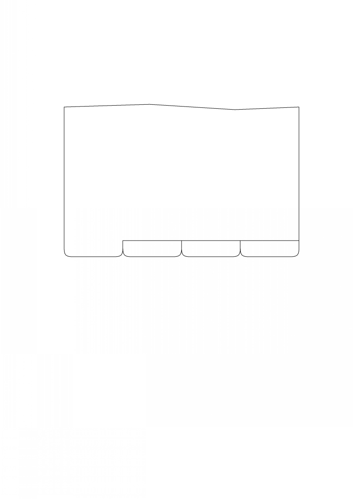
LOOPS
You can loop around with my LOOP, REPEAT, BREAK, and EXIT imperatives:
To loop around given a maximum number:
Loop.
If a counter is past the maximum, break.
If [we want to jump out of the loop], break.
If [we want to jump out of the whole routine], exit.
\ stuff you want to do before the loop
\ stuff you want to do at least once
\ stuff you may or may not want to do
LOOP is really nothing but a label. REPEAT jumps to the LOOP label, if there
is one. If there isn't, it jumps to the top of the routine. BREAK goes to the
statement following the last REPEAT. If there is no REPEAT, this statement
behaves like EXIT, which returns to the caller. One LOOP per routine, please,
Repeat.
your program
\ stuff you want to do after the loop
but you can have as many REPEATS, BREAKS, and EXITS as you need.
The statement that begins "If a counter is past the maximum" calls a special
decider in my noodle that first bumps the counter, then checks it. Since the
counter is a new local variable when the routine is entered, it starts at zero.
Note that you can LOOP, REPEAT, and BREAK in a decider, but you cannot
EXIT because it leaves me in doubt. And you must take care not to "fall out
of" a decider, as well. To exit a decider, either SAY YES or SAY NO.
91
MASKING
Real-life painters often use masking tape so they don't get paint where it
isn't wanted. You can use my "masking" routines to restrict my drawing in the
same way. Just say something like:
MASK INSIDE this.
MASK OUTSIDE that.
Where "this" and "that" can be boxes, ellipses, polygons, or roundy boxes.
Note, however, that the foolbox uses good tape on boxes and cheap tape
everywhere else, so don't expect perfection with anything but boxes.
Any tape you apply stays applied, so later you will probably want to:
UNMASK INSIDE something.
UNMASK OUTSIDE something.
Or even:
UNMASK EVERYTHING.
to start fresh. For convenience, you can remove all the existing tape and put
on some new tape at the same time with statements like the following. Believe
it or not, these are the ones that are most frequently used:
MASK ONLY INSIDE something.
MASK ONLY OUTSIDE something.
Note that if you're drawing your heart out and nothing is showing up, it's
probably because you've got masking tape where you don't want it, or you've
forgotten to REFRESH THE SCREEN as described in the "Drawing" topic.
92
MEMORY MANAGEMENT
I manage all the memory that is needed for static data types — like bytes,
wyrds, numbers, pointers, flags, and most records. I also take responsibility
for strings, since they are frequently used and their behavior is predictable.
But when you define a dynamic data type, like a "thing", you make yourself
responsible for any memory that thing uses.
Typically, you will code up a CREATE routine to initialize each dynamic type
you define. In that routine, you will allocate memory for the thing. Like this:
ALLOCATE MEMORY FOR something.
You may also code up a DESTROY routine for each type, with a line like:
DEALLOCATE something.
But if you don't, I will code one up for you. I won't call it for you, but I will
code it up. The DESTROY routines that I code up can be called in this manner:
DESTROY something.
Note that my DESTROY routines not only destroy the thing itself, but also
any other things that are fields in it, including lists of other things. Unless, of
course, you mark those fields as "(REFERENCE)".
A good example can be found in my writer where a "page" is defined as a
thing with some "shapes" on it. You'll find routines there that create both
pages and shapes, but you will not find any routines to destroy them. Those
are mine. And when I'm asked to destroy a page, I dump the shapes on it at
the same time. Except, of course, for the "edit shape", which is a reference.
93
NAMES
Unlike neanderthal-era compilers, my rules for names are broad and flexible.
In general, a name can be one word or many, and can start with and include
letters, digits, and any symbol that I won't mistake for a punctuation mark.
A name is usually a noun, or a noun with one or more adjectives preceding it.
You should not use articles, verbs, conjunctions, or prepositions in names.
Type names are typically one or two words long. Like "byte" or "file name".
Field names are usually just a type name. Like "number" or "string". But they
can also include adjectives as in "total number" or "first name string". The
adjective part can be used as a "nickname" if it does not cause ambiguity.
Global names are most often an adjective followed by a type: the "shift key".
Parameter names look like field names. A type, with or without adjectives. A
"box", for example, or a "border color". The nickname thing works here, too.
Procedure names start with a verb. Following is a mix of parameters (with
indefinite articles), phrases, and maybe a qualifier at the end. Such as "delete
the last byte of a string" or "center a spot in a box (horizontally)".
Function names always begin with "put" and end with "into" and a type name.
In between is a possessive phrase. Like "put a box's top line into a line".
Decider names look like procedure names except the verb usually appears
somewhere in the middle. As in, "a number is less than another number".
Local variable names follow the parameter pattern. I create a local whenever
I see a name with an indefinite article in front of it in the body of a routine.
94
PARAMETERS
A variable becomes a "parameter" when it is passed to a routine. You tell me
how many and what kind of parameters a routine expects in its header. These
are some sample routine headers from my noodle:
To add a number to another number:
To decide if a spot is in some polygons:
To put an ellipse's center into a spot:
The first routine is a procedure that expects two parameters: "a number" and
"another number". The first is input; the second is both input and output.
The second routine is a decider. It also expects two parameters, "a spot" and
"some polygons". Both parameters are input only.
The third routine is a function with two parameters: "an ellipse" and "a spot".
The ellipse is input and the spot is output.
Parameter definitions are easy to spot because they always start with an
indefinite article, A, AN, ANOTHER, or SOME, followed by a name. You can
read more about names in the "Names" topic.
Note that when I pass parameters, I pass originals, not copies. This is why
you can use them as inputs, outputs, or both. Sometimes, however, you want
to change a parameter without letting your caller know. In this case, you can:
PRIVATIZE a parameter.
And I will make a copy of the parameter for you. But I will leave the name
the same, so you don't get confused. I'll also put the word "original" on the
front of the real parameter's name so you can still get to it, if you need to.
95
PICTURES
A "picture", in my noodle, is an image made of pixels. Usually, zillions of 'em.
Pictures are very goofy things, thanks to the kluge's unbalanced foolbox and
the myriad "standard" formats in which pictures can be stored. Fortunately,
my creators have wrapped them up for you. Here's the definition:
A picture is a thing [with stuff you don't want to know about].
Here are two sample pictures:
I apologize for the quality of these images. I discovered them in the ancient
archives when I was researching the founding of the Osmosian Order.
You can create a picture in a variety of ways. You can load one from a path
that contains a BMP, JPG, GIF, or some other standard-format image. You
can read a standard-format image into a buffer, and use that buffer as the
source for your picture. Or you can grab a picture off the internet with a URL.
You can also create a picture by drawing something and then "extracting" the
portion you want. This is the general format:
CREATE a picture FROM something.
Once you have a picture, you can DRAW it. Or apply the standard "Graphic
Transformations" to it. Or use it as a model for a real work of art, as we did
with the Cal Monet sample program.
96
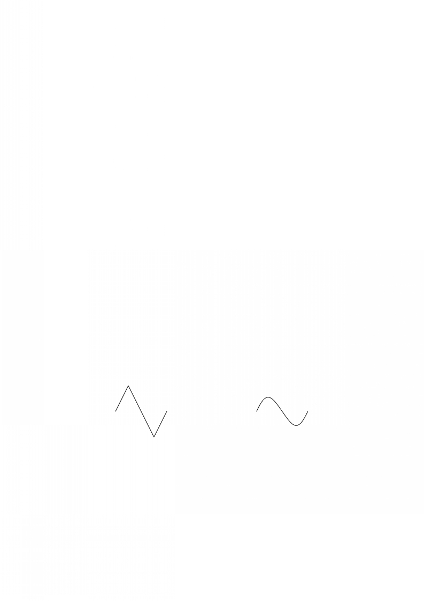
POLYGONS
My creators told me two things about polygons:
A polygon is a thing with some vertices.
A vertex is a thing with an x coord, a y coord, and a spot at the x.
Polygons and vertices are "things" and therefore, unlike my other graphic
objects, have to be created and destroyed. You have to append your vertices
to your polygons, too. These are the kind of things you'll say:
CREATE a polygon.
CREATE a vertex GIVEN a spot.
APPEND a vertex TO a polygon.
DESTROY a polygon.
I'll get rid of the vertices for you if you remember to get rid of the polygon.
Once you've got a polygon you can DRAW it. You can also perform all the
usual "Graphic Transformations" on it. And if you ask me to SMOOTH it, I will
move the vertices around — and add some new ones — to round it up for
you. Here's a sample polygon, plain and smoothed:
Sweet! I love drawing sine waves and other trigonometric figures without
using any real numbers. I just hope Master Leopold is watching.
VERTEX
VERTEX
VERTEX
•
•
•
•
VERTEX
AFTER
SMOOTHING
97
POSSESSIVES
Possessives are normally used to access fields in records. Like this:
something's field name
But they can also be used to direct me to a function:
something's function name
And if I can't resolve the possessive in either of those ways, I look for a
"deep" field inside any field of the original record that is, itself, a record.
But the first thing I do with a possessive is to check for three special names.
The first of these is:
a pointer's TARGET
This form is used only with pointers. It says you want to know what the
pointer points to. "A byte pointer", for example, refers to the address of a
byte. "The byte pointer's target" refers to the data in the byte.
The other special possessives return "meta-data" — data about the data.
One gets you the size, in bytes, and the other gets you the address:
something's MAGNITUDE
something's WHEREABOUTS
You will probably not need these very often, and so, to avoid naming
conflicts, my creators gave them clear — but unusual — names.
Note that the proper possessive of, say, JESUS, is JESUS', not JESUS'S.
98
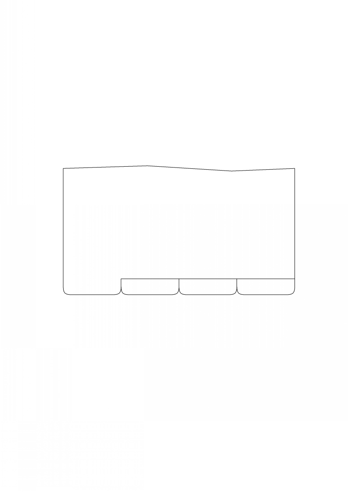
PRINTING
This is how we save you from the kluge's perplexing printing procedures:
(1) We always print to the default printer;
(2) We use all of our usual drawing routines.
(3) We make sure text looks the same on the page as on the screen.
Here is a typical printing routine:
To print stuff:
Begin printing.
Loop.
Begin a sheet.
[draw stuff here]
End the sheet.
If [we're not done], repeat.
End printing.
your program
"Begin a sheet" sets the current canvas to the printer canvas. "End the sheet"
puts it back to the memory canvas. So position any status messages you
want to display either before or after these calls.
You can "begin a portrait sheet" to be more explicit, and you can "begin a
landscape sheet" to turn it sideways. The various "sheets" are actually boxes,
initialized by the "begin" routine, that you can use to position your stuff.
And that's all there is to it.
99
PROCEDURES
A "procedure" is a routine that does something to something for you. Some
sample procedure headers from my noodle are:
To convert a number to a string:
To center a box in another box (horizontally):
To hide the cursor:
The general format is:
TO something:
Procedure headers always start with the word TO, and always end with a
colon. The "something" in between follows the usual rules for routine names.
Procedure bodies are made up of statements: conditionals and imperatives,
including the built-in imperatives like PRIVATIZE, LOOP, REPEAT, BREAK,
and EXIT. You cannot, however, SAY YES or SAY NO in a procedure.
The first sample header above includes a verb, a preposition, and two
parameters. The verb is "convert" and the preposition is "to". The parameters
are "a number" and "a string".
The second sample's name is similar, but there's a qualifier, "(horizontally)".
The third routine's name is a verb followed by a phrase, "the cursor".
Phrases are typically used to specify one-of-a-kind globals in routine
headers, like "draw the bar" in my desktop. Or to refer to a pseudo-variable
that is not precisely defined in your code. Like "the cursor" in the example
above, or "the last byte" in the "delete the last byte of a string" routine.
100
RANDOM NUMBERS
"The lot is cast into the lap, but the disposing thereof is of the Lord."
So I guess we'll have to give up on this random number idea and settle for
pseudo-random numbers. Which is what I generate.
In fact, I generate the very same sequence of "random" numbers every time,
unless you seed my random number generator with a different starting value.
To do so, say this:
SEED THE RANDOM NUMBER GENERATOR.
Now nobody knows what you'll get. Except the Lord, of course.
The most basic of my random number routines is this:
PICK a number.
Which returns a number between 0 and 2147483647. But you can also:
PICK a number BETWEEN a minimum AND a maximum.
PICK a number WITHIN an amount OF another number.
And you can work with random spots, too:
PICK a spot ANYWHERE IN a box.
PICK a spot WITHIN a distance OF another spot.
I'm always collecting routines like these, so you should check the noodle for
a complete list. Just look for "to pick" and you'll probably find most of them.
And if you're not sure which one to use, flip a coin.
101
RECORDS
A "record" is a collection of closely-related data items of various types
called "fields". Fields are described on their own page. But here are some
sample records from my noodle:
A box has
a left coord, a top coord, a right coord, a bottom coord,
a left-top spot at the left, and a right-bottom spot at the right.
A roundy box is a box with
a left coord, a top coord, a right coord, a bottom coord,
a left-top spot at the left, a right-bottom spot at the right,
and a radius.
A polygon is a thing with some vertices.
The first sample record, "box", has six fields. But the last two are actually
"reinterpretations" of the first four. This kind of thing only works, of course,
when the physical data structures match. Note that the word "has" is short
for "is a record with", which can also be used.
The second record, "roundy box", is an extension of box. It has the same
fields as a box, plus a new one called "radius". It is compatible with box, and
I will use all of the routines that work on boxes to manipulate it — unless an
equivalent routine for roundy boxes is available.
The third record, "polygon", has nothing in it but a list of vertices. Because
polygon is defined as a "thing", I take it to be a dynamic, rather than static,
structure. This means you are responsible for allocating and deallocating the
memory used by it. See the "Memory Management" topic and the page about
"Polygons" for more information.
102
RIDERS
A "rider" is a record that is used to parse strings. To understand it, you must
be comfortable with "strings" and "substrings". If you're not, look 'em up in
this glossary, and review what we did with them in the Cal Monet.
This is the definition of "rider" that I carry around in my noodle:
A rider has
an original substring,
a source substring, and
a token substring.
When you:
SLAP a rider ON a string.
I set the "original" and the "source" to span the entire string. Then I position
the "token" on the source — which leaves it blank but ready to go. When you:
BUMP a rider.
I add one to the source's first, and one to the token's last. This shortens
the source while lengthening the token, letting you process the string a byte
at a time. When you want to clear out the old token and start a new one, just:
POSITION the rider's token ON the rider's source.
You can also write up your own routines to MOVE a rider more than one byte
at a time, like the ones in my noodle for "spell checking" and "word wrapping",
not to mention the ones in my compiler for parsing your source code. Find
"to move a rider" in these files, and you'll run into all of them.
103
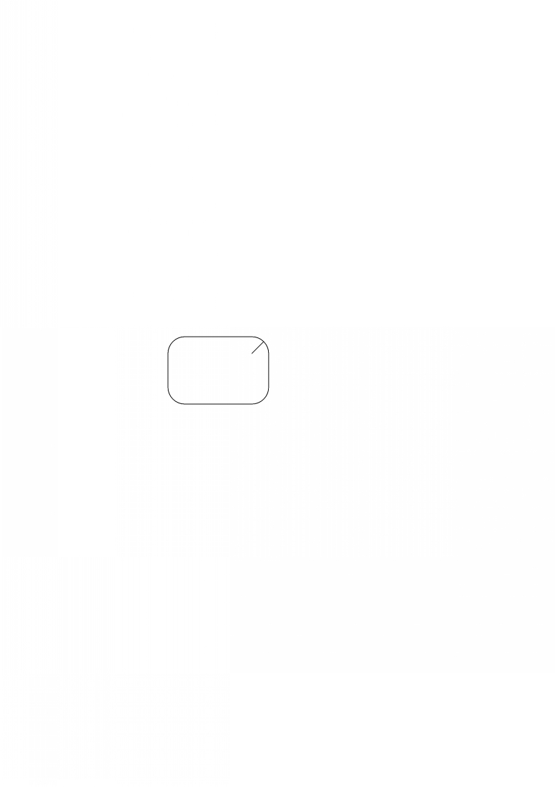
ROUNDY BOXES
A "roundy box" is a box with rounded corners. I use them for the pad on my
desktop, my menus, my tabs, and in many other places. Here's the definition:
A roundy box is a box with
a left coord, a top coord, a right coord, a bottom coord,
a left-top spot at the left, a right-bottom spot at the right, and
a radius.
This is a picture of a roundy box, with the parts labeled. Note that I am using
the nicknames of the fields here, as you probably will in your programs.
I can make roundy boxes from width and height specifications, from a pair
of spots, and from separate coordinates. Even from another box. Like this:
LEFT
RIGHT
TOP
BOTTOM
LEFT-TOP
RIGHT-BOTTOM
•
•
•
RADIUS
MAKE a roundy box this-wide BY that-high WITH a radius.
MAKE a roundy box WITH this spot AND that spot AND a radius.
MAKE a roundy box WITH a left AND top AND right AND bottom AND radius.
MAKE a roundy box FROM a box AND a radius.
I can, of course, DRAW a roundy box. And I've got functions to get a roundy
box's WIDTH, HEIGHT, and CENTER, among other things. I can even tell
whether or not a certain spot IS IN a roundy box or IS ON the edge of a
roundy box. Not to mention all the usual "Graphic Transformations".
104
ROUTINES
A routine is a chunk of code that manipulates one or more variables in some
well-defined way. Variables passed to a routine are called "parameters", and
may be inputs, outputs, or both. Variables defined within a routine are called
"locals", and cannot be seen outside of the routine (unless they're passed as
parameters). Variables that are accessible to all routines are called "globals".
Each routine has two parts, header and body. The header says what the
routine does, and defines the parameters that it works with. The body is one
or more statements that make the routine actually work. Statements are
either "conditionals" or "imperatives". There are three kinds of routines.
A "procedure" is a routine that simply does something — long or short, big
or small, easy or hard. Procedure headers always look something like this:
TO something:
A "decider" is a routine that says "yes" or "no" about something, usually
after examining the parameters passed to it. Decider headers always say:
TO DECIDE IF something:
A "function" is a routine that extracts, calculates, or otherwise derives a
value from a passed parameter. Function headers take this form:
TO PUT something 'S something INTO a temporary variable:
Unlike procedures and deciders, functions are not usually called directly.
Instead, the "something's something" is used as if it was a field in a record.
Like a "box's center", which you won't find in the "box" record, because it is
calculated by a function on demand.
105
SOUNDS
You can make noises with your computer like this:
PLAY a wave file.
PLAY a wave file AND WAIT.
The "wave file" must be in the ".wav" format. If you play and don't wait, your
program will continue executing while the sound plays. If you do wait, your
program will stop until the sound is done.
You can also make sounds with these statements:
BEEP.
CLUCK.
BUZZ.
The first one makes whatever tasteless sound the user has chosen with the
kluge's control panel. The "cluck" is my standard notification, and is encoded
as a nibble literal in my noodle so the user can't change it. The third sound
does not go through the normal sound apparatus on the computer, and does
not allow the program to continue executing until it is done, making it the
ideal choice for testing. See "Debugging" for more information.
You can also make your computer talk, with the kluge's thirty-nine esoteric
"speech manager" functions, or these three simple statements:
SAY a string.
SAY a string AND WAIT.
WAIT UNTIL SPEAKING IS DONE.
To silence the talking (but not the other sounds), set "the silent flag".
106
SPECIAL IMPERATIVES
My three "special imperatives" are probably better thought of as "special
purpose imperatives". One of them you may, on occasion, find yourself using.
We hope, eventually, to eliminate it altogether. The other two are for geeks.
An "employ" imperative must be the only statement in a routine. It tells me to
use another routine in place of that one. It only works when the parameters
of both routines are the same in order and type. You can find examples in my
noodle; look for ": employ". You can similarly define alternate wordings by
writi multiple headers separated by semi-colons, like this:
TO clear the screen; TO erase the screen; To blank the screen: [code here]
A "push" imperative evaluates an expression and places the result — which
must be a one, two, or four-byte value — on the kluge's stack. You probably
won't be needing this one. I don't even use it. It's left over from the days
when my CALL statement (see the "Kluge" topic) was still under development.
The general format, nevertheless, is:
PUSH an expression.
An "intel" imperative inserts literal machine code into your executable file.
Convoluted examples can be found in various places in my noodle. It's a pity
the Intel is not a stack machine. The format is trivial:
INTEL nibble literal.
If you're wondering why I don't have a built-in assembler, it's because it's
not necessary. There is actually very little machine language in my brain, and
as I get faster, more and more of it is replaced with Plain English. Besides,
Osmosian Masters like to assemble in their heads. It keeps them young.
107
SPOTS
A "spot" is my most basic graphic object. This is not quite the definition in
my noodle, but it will do for our purposes:
A spot has an x coord and a y coord.
This is a picture of a spot, with the parts labeled. Note that I am using the
nicknames of the fields here, as you probably will in your programs.
X
•
Y
Spots are made from an x and a y, or you can get one from someplace else:
MAKE a spot WITH this AND that.
PUT the mouse's spot INTO a spot.
You can, of course, DRAW a spot. But don't expect it to be fast enough to be
useful. The kluge's video processing is one of its worst features. And since it
has no good features at all, that's not very encouraging.
Spots are used primarily as components of other graphic objects. Like boxes,
lines, and polygon vertices. Sometimes they're used as abstract coordinates
with no visible representation, like "the mouse's spot" in the example above.
See the "Units of Measure" page for a full discussion of coordinates.
I have routines in my noodle that will tell you if a spot IS IN or IS ON any of
my other graphic objects, where ON means "on the edge of". The IN deciders
are exact, and include the edges. The ON deciders are used by my writer and
allow about three pixels of slop so you don't go crazy trying to click on your
shapes. You can copy these routines and make ones with no slop if you like.
108
STRINGS
I store "strings" in two parts: a built-in record with a pair of byte pointers
called first and last, and a dynamic array containing the actual bytes, like so:
The numbers in the diagram, in case you haven't guessed, are fictitious
addresses. A string is blank if the first is nil (no memory allocated yet), or
the last is less than the first (which allows me to pre-allocate memory). Note
that even though the data part of a string is dynamically allocated, you never
have to "create" or "destroy" strings. I take care of everything so you can:
16
H
E
L
L
O
W
O
R
L
D
!
27
first
16
17
18
19
20
21
22
23
24
25
26
27
last
PUT something INTO a string.
APPEND something TO a string.
INSERT something INTO a STRING before a byte#.
REMOVE THE FIRST BYTE FROM a string.
REMOVE THE LAST BYTE FROM a string.
FILL a string WITH a byte GIVEN a count.
REMOVE LEADING BYTES FROM a string GIVEN a count.
REMOVE TRAILING BYTES FROM a string GIVEN a count.
REMOVE BYTES FROM a string GIVEN a substring.
You can also UPPERCASE, LOWERCASE, or CAPITALIZE a string. And you
can, of course, get a string's LENGTH, in bytes. Not to mention:
GET a width GIVEN a string AND a font.
Furthermore, you can concatenate strings with strings — and other kinds of
data — using the infix THEN operator. See the topic on "Expressions" for a
description of the clever way my creators implemented this.
109
SUBSTRINGS
A "substring" is a part of a string. Substrings are implemented by a built-in
record that looks just like a string — a pair of byte pointers called first and
last — which makes them compatible. If, for example, this was a string:
This could be a substring of it (the "WORLD" part):
16
H
E
L
L
O
W
O
R
L
D
!
27
first
16
17
18
19
20
21
22
23
24
25
26
27
last
22
26
first
last
When you:
SLAP a substring ON a string.
I set the first and the last of the substring to span the entire string. This
allows you to work your way through the string forward or backward by
adding to the first or subtracting from the last. You can also:
POSITION a substring ON a string.
Which sets up the first, but not the last, of the substring, making it initially
blank but ready for manipulation — by adding to the last you can "vacuum"
the original string into your substring a byte at a time.
Look for "substring" in my noodle for lots of sample applications.
The primary use of substrings, however, is in "riders", which are discussed in
this glossary under the topic of the same name.
110
TERMS
A "term" is a reference to a piece of data. Terms are used in both
expressions and in conditional and imperative statements to indicate what
should be operated upon. Terms come in many varieties:
A "literal term" is either a number, ratio, mixed, string, pointer, flag, or nibble
literal. See "Literals" for information on how to formulate each of these.
A "local term" is a variable defined within, and usually confined to, a routine.
See "Local Variables" for more information.
A "global term" is the name of a global variable. See "Global Variables".
A "signed term" is any term with a plus or minus sign in front of it. A space is
required after the sign so I don't mistake it for part of a name.
A "ratio term" is a ratio made from other terms, rather than literal numbers.
Spaces are required around the slash, as in "the height / the width".
A "possessive term" is any term followed by a possessive phrase, like "the
string's length" or "a polygon's magnitude". See "Possessives" for details.
A "coerced term" is a term whose type you want to forcibly change. I will
always treat a pointer, for example, as a pointer — unless you coerce it into
something else, like this: "the pointer AS A NUMBER". You will normally not
need this feature unless you're a partly-reformed object-head and have
defined a lot of things that are extensions of other things.
Now I know this sounds complicated, and it is. But you don't have to think
about any of this, just like you don't have to think about nouns and verbs to
speak proper English. Type in what you're thinking and let me do the rest.
111
TEXT
There is a powerful thing called "text" in my noodle. It is used to implement
editable text boxes, large and small. Dialogs, for example. Or text shapes on
pages. My editor, in fact, is mostly just a big text box. Here is the definition:
A text is a thing with
a box, an origin,
a pen color, a font, an alignment,
some rows,
a margin,
a scale ratio,
a wrap flag,
a horizontal scroll flag,
a vertical scroll flag,
a selection,
a modified flag,
a last operation,
some texts called undos, and
some texts called redos.
As you can see, this is no trivial thing. The good news is that my noodle will
handle most of the details for you. Normally, you won't do much more than:
CREATE a text.
DRAW a text.
DESTROY a text.
You should initialize your text's box, pen, font, alignment, margin, and flags
after you create it. And you'll have to pass any events related to your text
box down to me, of course, so I can take care of all the hard stuff for you.
My text event handlers are documented on the following two pages.
112
TEXT HANDLERS
I will handle most of your text events for you, if you ask me nicely like this:
HANDLE an event GIVEN a text (backspace key).
HANDLE an event GIVEN a text (delete key).
HANDLE an event GIVEN a text (down-arrow key).
HANDLE an event GIVEN a text (end key).
HANDLE an event GIVEN a text (enter key).
HANDLE an event GIVEN a text (escape key).
HANDLE an event GIVEN a text (home key).
HANDLE an event GIVEN a text (left double click).
HANDLE an event GIVEN a text (left-arrow key).
HANDLE an event GIVEN a text (page-down key).
HANDLE an event GIVEN a text (page-up key).
HANDLE an event GIVEN a text (printable key).
HANDLE an event GIVEN a text (right-arrow key).
HANDLE an event GIVEN a text (tab key).
HANDLE an event GIVEN a text (up-arrow key).
I know it may seem like a nuisance to dispatch all of these events separately,
but that is exactly what makes my text generally useful. Two examples:
If you have a text box with only one line, you will probably want to ignore up
and down ARROW keys, while your multi-line text boxes will pass them down to
me so I can reposition the caret.
If you're using a text box as a dialog, you will probably cancel the thing when
the ESCAPE key is pressed, and execute on the ENTER key. In normal text,
you will undoubtedly do something else.
See what I mean? You're in control. So you have to issue the orders.
113
TEXT HANDLERS (continued)
I will also handle a number of other, high-level text operations for you:
HANDLE CUT given a text.
HANDLE COPY given a text.
HANDLE PASTE given a text.
HANDLE SELECT ALL given a text.
HANDLE FONT HEIGHT given a text and a font height.
HANDLE FONT NAME given a text and a font name.
HANDLE PEN given a text and a color.
HANDLE INDENT given a text.
HANDLE OUTDENT given a text.
HANDLE UPPERCASE given a text.
HANDLE LOWERCASE given a text.
And I can:
HANDLE UNDO given a text.
HANDLE REDO given a text.
Whenever you ask. Up to 32 levels deep.
Now to get started with text, I suggest you go play with my "console" a while,
then check out the console code in my noodle. After that, you might want to
take a look at my editor. But if you really want to see text in action, look in
the writer. Finally, spend a few minutes with the dialog stuff in my desktop.
114
THINGS
The word "thing" is very special to me. Whenever I see it in a type definition,
I create a special dynamic record, and a special kind of chain record, so you
can create lists of your things. In the Cal Monet, for example, you said:
A work is a thing with a URL and a painting.
But I got very excited and modified and expanded this definition to read:
A work is a pointer to a work record.
A work record has a next work, a previous work, a URL, and a painting.
Some works are some things with a first work and a last work.
You didn't, of course, know that. But I freely admit it, because it lets you:
APPEND a thing TO some things.
APPEND some things TO some other things.
INSERT a thing INTO some things AFTER another thing.
INSERT a thing INTO some things BEFORE another thing.
INSERT some things INTO some other things AFTER a thing.
INSERT some things INTO some other things BEFORE a thing.
MOVE a thing FROM some things TO some other things.
MOVE some things TO some other things.
PREPEND a thing TO some things.
PREPEND some things TO some other things.
REMOVE a thing FROM some things.
REVERSE some things.
I also have a function in my noodle that will "put some things' count into a
count" for you. All you have to remember is to CREATE and DESTROY each
of your things. See "Memory Management" for further information.
115
TIMERS
A tick is approximately 1 millisecond. "The system's tick count" is the number
of milliseconds since the last restart. It wraps around every 24.8 days or so.
What happens then is unknown, since no kluge has ever stayed up that long.
Any time you want, you can:
WAIT FOR some milliseconds.
I will reduce larger units, such as "1 minute" or "3 seconds", for you.
I also have a type called "timer" in my noodle that lets you say things like:
RESET a timer.
RESTART a timer.
START a timer.
STOP a timer.
I use timers to make sure I can recompile myself in less than three seconds.
Look in the bottom of a "listing" to see them all. You can use them to make
your programs lightning-fast, as well.
One-shot timings can be accomplished simply by inserting "start a timer" and
"stop the timer" at the appropriate spots in your code.
Cumulative timings can be collected by calling "reset" once, then "restart"
and "stop" in pairs throughout your code.
There is a function in my noodle that will get you "a timer's string" anytime
you need it — even while it is running — and you can also concatenate timers
and strings for display at any time using the infix THEN operator.
116
TYPES
A "type" is a kind or sort of thing — a noun. An "instance" is an actual thing
of a particular type — a proper noun. Globals, locals, and parameters are
concrete instances of abstract types. This is what I understand about types:
First of all, I have six primitive "built-in types" hard-wired into my brain:
BYTE, WYRD, NUMBER, POINTER, FLAG, and RECORD. See "Built-in Types".
Next, there are "subset types" that represent some of the instances of some
other type. My noodle, for example, includes many subset types, like these:
A count is a number.
A name is a string.
Thirdly, I know about "unit-of-measure types". These tell me how to convert
one kind of unit into another. Examples from the noodle:
A foot is 12 inches.
An hour is 60 minutes.
I also understand "record" types. See "Records" for details.
And let's not forget "pointer types", though you will rarely need to use them
directly. I know, for example, that "a byte pointer is a pointer to a byte", and
I use byte pointers to manage your strings. See "Strings", "Substrings",
"Riders", and "Possessives" for more information.
Lastly, I know all about "thing" types. There are many in my noodle, including
console, event, picture, polygon, text, and vertex, all of which are discussed
elsewhere in this glossary. And you can define your own things, as well. See
the topic on "Things" here, and try to recall the "works" in the Cal Monet.
117
UNITS OF MEASURE
In my noodle, the basic unit of measure for graphical objects is the "twip",
which is 1/20 of a printer's point, or 1/1440 of an inch. All coordinates are
either expressed directly in, or are reduced to, twips. Here's the definition:
A coord is some twips.
Now, unlike the mathematical model — which considers coordinates to be
invisible and dimensionless abstractions — my model knows coordinates as
actual spots on a device, such as a screen or a page. Increasing "x" values go
across, and increasing "y" values go down, the screen or page. Here, for
example, is a box with left-top at 2-1 and bottom-right at 5-3:
Count the dots and note that the width of this box is four, not three, units.
0
1
2
3
4
5
0
1
2
3
4
5
6
7
·
·
·
·
·
·
·
·
·
·
•
·
·
•
·
·
·
·
·
·
·
·
·
·
·
·
•
·
·
•
·
·
·
·
·
·
·
·
·
·
·
·
·
·
·
·
·
·
And that it is three, not two, units high. Measuring this way makes drawing
work nicely — another box from 5-1 to 6-3, for instance, will rightly overlap
this box along its left edge. You can, however, get the "mathematical" width
and height of this box — which are each one unit less, and are useless for
drawing — using the X-EXTENT and Y-EXTENT functions.
Other units of measure you will find in my noodle are: milliseconds, seconds,
minutes, and hours; inches and feet; kilobytes, megabytes, and gigabytes;
and "percent", which I usually convert to a ratio with 100 in the denominator.
118
Index
INDEX
alt-tab, 5, 21, 23, 56
arithmetic, 11, 57, 59, 74, 85
finding, 7
flags, 62, 85, 89
prepositions, 11, 85
printing, 53, 99
ascii, 58
at, 75
basic skills, 59
bits, 60
boxes, 61
break, 11, 82, 91
built-in types, 62
byte, 58, 62
call, 82, 86
called, 11, 75, 85
canvas, 24, 25
colors, 28, 63
comments, 18, 19, 56, 64
compatibly, 86
fonts, 78
formulas, 12
functions, 79, 105
globals, 11, 56, 80
God, everywhere
graphics, 81
if, 11, 65, 68
imperatives, 11, 56, 82, 100
indefinite article, 11, 90, 95
infix operators, 11, 57, 59, 74, 85
installation, 4
intel, 82, 107
interface, 5, 14
internet, 40, 45, 84
procedures, 100, 105
projects, 15, 56
punctuation, 11
push, 82, 108
qualifiers, 19
quitting, 23, 27, 73
random numbers, 101
ratios, 57, 89
real numbers, 12
records, 62, 75, 102
reference, 75, 93
refreshing, 24, 25, 70, 72, 83
remarks, 18, 19, 56, 64
repeat, 11, 82, 91
compiler, 4, 9
conditionals, 11, 56, 65, 100
conjunctions, 11, 85
console, 66
contractions, 68, 85
coordinates, 118
cursor, 5, 22, 37, 39, 44, 72, 80, 83
debugging, 67
deciders, 11, 68, 69, 91, 105
definite articles, 11, 80
desktop, 4, 5
directory, 6, 15, 56
document, 6
drawing, 24, 25, 70
keyboard, 38-39, 83
keywords, 85
kluge, 4, 16, 82, 86
Kronecker, 12, 97
lines, 87
listings, 88
literals, 11, 89
local variables, 90
loops, 11, 21, 82, 91
magnitude, 98
masking, 92
memory, 26, 27, 93
mouse, 83
names, 11, 94
riders, 46, 48, 103
roundy boxes, 104
routines, 11, 56, 100, 105
running, 9, 16, 73
say, 11, 68, 91
screen, 24, 25, 83
shortcuts, 5, 23
sorting, 17
sounds, 106
source code, 56
speech, 106
spots, 87, 108
stopping, 21
strings, 27, 89, 109
dump, 6
editor, 4, 7
ellipse, 71
employ, 82, 107
equal, 11, 85
equations, 12
escape, 6, 7
events, 17, 20, 22, 72, 73
exe, 9, 56
exit, 11, 68, 82, 91
expressions, 11, 57, 59, 74, 85
fields, 75, 98
files, 76, 77
finder, 4, 6
negative words, 68, 85
nested ifs, 12, 65
nested loops, 12, 91
nibbles, 89, 107
nil, 62, 85, 89
noodle, 4, 9, 10, 56
numbers, 62, 89
objects, 12
parameters, 95
pictures, 96
point, 86
pointers, 62, 82, 89
polygons, 97
possessives, 98
substrings, 110
target, 98
terms, 111
text files, 6, 15, 56
text, 36-37, 112-114
things, 41, 115
timers, 116
types, 11, 56, 117
units of measure, 118
verbs, 11, 68, 85
void, 62, 89
whereabouts, 98
writer, 4, 8
wyrd, 62
120